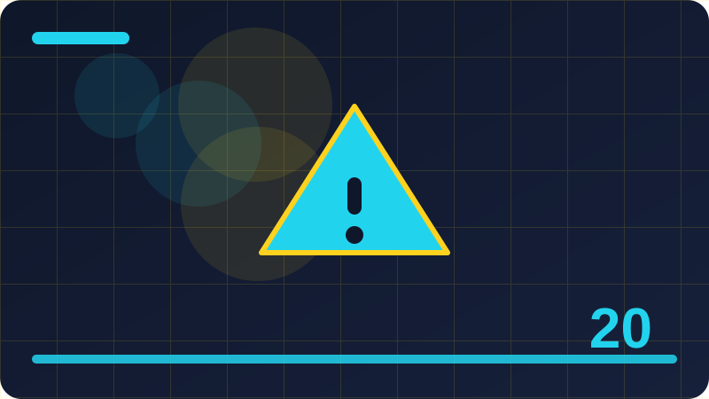

Chapter 20: Nil and Safe Handling

Section 1: What Nil Means
Look closely at the example in this section and trace it line by line, asking what each line contributes to what nil means. Ruby is designed to read a little like plain language, so try turning each line of the example into an ordinary sentence in your own words. The example shows what nil means in action rather than only describing it, and that matters because behaviour is easier to remember than a definition. As you trace the code, notice the values going in, the action Ruby performs, and the result that comes out at the end. If a line confuses you, cover the rest of the example and focus on that single line until its job is clear.
A common mistake with what nil means is to use it without checking what Ruby actually received, so always confirm the value you are working with. Another helpful habit is to start with the simplest version of what nil means that could possibly work, then add complexity only when you need it. When something goes wrong, read the error message slowly, because Ruby usually points near the line where your assumption broke. Experienced programmers return to ideas like what nil means again and again, not because they forgot them, but because getting them right keeps larger programs simple. Remember that clarity matters as much as correctness: code that is easy to explain is usually easy to fix later.
In a real program, what nil means earns its place by making a repeated job shorter, safer, or easier to change without breaking other parts. Before you reach for what nil means, ask whether it makes the intention of your code clearer to the next person who reads it. A good test is to imagine explaining your program to a teammate: if what nil means helps that explanation, it is probably the right choice here. Small programs are the best place to practise what nil means, because you can try it, break it, fix it, and try again in minutes. Over time you will recognise situations where what nil means fits naturally, and that recognition is the real skill this section builds.
To practise what nil means, rewrite the example in your own style, rename the variables, and run it to confirm it still behaves the same way. Then change one small thing on purpose and observe exactly how the output changes, because that observation teaches the rule behind the idea. Write a one-sentence summary of what nil means in a notebook, using no code words you cannot explain, and keep it for revision. Finally, look for what nil means in code written by other people, and notice how they use it in a slightly different context from yours. That habit of reading, trying, changing, and summarising will carry you through every chapter that follows this one.
This section is about what nil means, and it is worth learning carefully because it shapes how you read and write Ruby programs every day.
name = nil
puts name.nil?
puts name.inspect
name = 'Ada'
puts name.nil?Check: What is the main idea of this section, and how would you explain it in your own words?
Section 2: Nil Is an Object
A common mistake with nil is an object is to use it without checking what Ruby actually received, so always confirm the value you are working with. Another helpful habit is to start with the simplest version of nil is an object that could possibly work, then add complexity only when you need it. When something goes wrong, read the error message slowly, because Ruby usually points near the line where your assumption broke. Experienced programmers return to ideas like nil is an object again and again, not because they forgot them, but because getting them right keeps larger programs simple. Remember that clarity matters as much as correctness: code that is easy to explain is usually easy to fix later.
In a real program, nil is an object earns its place by making a repeated job shorter, safer, or easier to change without breaking other parts. Before you reach for nil is an object, ask whether it makes the intention of your code clearer to the next person who reads it. A good test is to imagine explaining your program to a teammate: if nil is an object helps that explanation, it is probably the right choice here. Small programs are the best place to practise nil is an object, because you can try it, break it, fix it, and try again in minutes. Over time you will recognise situations where nil is an object fits naturally, and that recognition is the real skill this section builds.
To practise nil is an object, rewrite the example in your own style, rename the variables, and run it to confirm it still behaves the same way. Then change one small thing on purpose and observe exactly how the output changes, because that observation teaches the rule behind the idea. Write a one-sentence summary of nil is an object in a notebook, using no code words you cannot explain, and keep it for revision. Finally, look for nil is an object in code written by other people, and notice how they use it in a slightly different context from yours. That habit of reading, trying, changing, and summarising will carry you through every chapter that follows this one.
This section is about nil is an object, and it is worth learning carefully because it shapes how you read and write Ruby programs every day. When you understand nil is an object, you stop guessing at what a program will do and start predicting its behaviour with confidence. The core idea behind nil is an object is simple once you see it in a small example: nil is a real object in Ruby, an instance of NilClass, not a missing piece of the program Beginners sometimes rush past nil is an object because the first example looks easy, yet the idea becomes powerful when programs grow larger and more realistic. Small experiments teach faster than long notes, so change one thing and run the code again. Keep your examples tiny at first, because a tiny example makes a mistake easy to find.
user = nil
puts user&.name
puts user&.upcase
user = 'ada'
puts user&.upcaseCheck: Why does this idea matter when you are writing a real Ruby program?
Section 3: Where Nil Comes From
This section is about where nil comes from, and it is worth learning carefully because it shapes how you read and write Ruby programs every day. When you understand where nil comes from, you stop guessing at what a program will do and start predicting its behaviour with confidence. The core idea behind where nil comes from is simple once you see it in a small example: nil appears when a hash key is missing, a method finds nothing, or a variable has no value yet Beginners sometimes rush past where nil comes from because the first example looks easy, yet the idea becomes powerful when programs grow larger and more realistic. Think of where nil comes from as one clear tool in your toolbox, not as a rule to memorise, and ask what job it does for you.
Look closely at the example in this section and trace it line by line, asking what each line contributes to where nil comes from. Ruby is designed to read a little like plain language, so try turning each line of the example into an ordinary sentence in your own words. The example shows where nil comes from in action rather than only describing it, and that matters because behaviour is easier to remember than a definition. As you trace the code, notice the values going in, the action Ruby performs, and the result that comes out at the end. If a line confuses you, cover the rest of the example and focus on that single line until its job is clear.
A common mistake with where nil comes from is to use it without checking what Ruby actually received, so always confirm the value you are working with. Another helpful habit is to start with the simplest version of where nil comes from that could possibly work, then add complexity only when you need it. When something goes wrong, read the error message slowly, because Ruby usually points near the line where your assumption broke. Experienced programmers return to ideas like where nil comes from again and again, not because they forgot them, but because getting them right keeps larger programs simple. Remember that clarity matters as much as correctness: code that is easy to explain is usually easy to fix later.
In a real program, where nil comes from earns its place by making a repeated job shorter, safer, or easier to change without breaking other parts. Before you reach for where nil comes from, ask whether it makes the intention of your code clearer to the next person who reads it. A good test is to imagine explaining your program to a teammate: if where nil comes from helps that explanation, it is probably the right choice here. Small programs are the best place to practise where nil comes from, because you can try it, break it, fix it, and try again in minutes. Keep your examples tiny at first, because a tiny example makes a mistake easy to find.
settings = {}
puts settings[:theme] || 'light'
puts settings.fetch(:theme, 'light')Check: What would happen if you changed one important part of the example in this section?
Section 4: Checking for Nil with nil?
Look closely at the example in this section and trace it line by line, asking what each line contributes to checking for nil with nil?. Ruby is designed to read a little like plain language, so try turning each line of the example into an ordinary sentence in your own words. The example shows checking for nil with nil? in action rather than only describing it, and that matters because behaviour is easier to remember than a definition. As you trace the code, notice the values going in, the action Ruby performs, and the result that comes out at the end. If a line confuses you, cover the rest of the example and focus on that single line until its job is clear.
A common mistake with checking for nil with nil? is to use it without checking what Ruby actually received, so always confirm the value you are working with. Another helpful habit is to start with the simplest version of checking for nil with nil? that could possibly work, then add complexity only when you need it. When something goes wrong, read the error message slowly, because Ruby usually points near the line where your assumption broke. Experienced programmers return to ideas like checking for nil with nil? again and again, not because they forgot them, but because getting them right keeps larger programs simple. Remember that clarity matters as much as correctness: code that is easy to explain is usually easy to fix later.
In a real program, checking for nil with nil? earns its place by making a repeated job shorter, safer, or easier to change without breaking other parts. Before you reach for checking for nil with nil?, ask whether it makes the intention of your code clearer to the next person who reads it. A good test is to imagine explaining your program to a teammate: if checking for nil with nil? helps that explanation, it is probably the right choice here. Small programs are the best place to practise checking for nil with nil?, because you can try it, break it, fix it, and try again in minutes. Over time you will recognise situations where checking for nil with nil? fits naturally, and that recognition is the real skill this section builds.
To practise checking for nil with nil?, rewrite the example in your own style, rename the variables, and run it to confirm it still behaves the same way. Then change one small thing on purpose and observe exactly how the output changes, because that observation teaches the rule behind the idea. Write a one-sentence summary of checking for nil with nil? in a notebook, using no code words you cannot explain, and keep it for revision. Finally, look for checking for nil with nil? in code written by other people, and notice how they use it in a slightly different context from yours. When you can explain the idea to a friend, you probably understand it well enough to use it.
data = { user: { address: { city: 'Lagos' } } }
puts data.dig(:user, :address, :city)
puts data.dig(:user, :missing, :city).inspectCheck: How could you test your understanding of this idea with a tiny program of your own?
Section 5: Nil in Conditionals
A common mistake with nil in conditionals is to use it without checking what Ruby actually received, so always confirm the value you are working with. Another helpful habit is to start with the simplest version of nil in conditionals that could possibly work, then add complexity only when you need it. When something goes wrong, read the error message slowly, because Ruby usually points near the line where your assumption broke. Experienced programmers return to ideas like nil in conditionals again and again, not because they forgot them, but because getting them right keeps larger programs simple. Remember that clarity matters as much as correctness: code that is easy to explain is usually easy to fix later.
In a real program, nil in conditionals earns its place by making a repeated job shorter, safer, or easier to change without breaking other parts. Before you reach for nil in conditionals, ask whether it makes the intention of your code clearer to the next person who reads it. A good test is to imagine explaining your program to a teammate: if nil in conditionals helps that explanation, it is probably the right choice here. Small programs are the best place to practise nil in conditionals, because you can try it, break it, fix it, and try again in minutes. Over time you will recognise situations where nil in conditionals fits naturally, and that recognition is the real skill this section builds.
To practise nil in conditionals, rewrite the example in your own style, rename the variables, and run it to confirm it still behaves the same way. Then change one small thing on purpose and observe exactly how the output changes, because that observation teaches the rule behind the idea. Write a one-sentence summary of nil in conditionals in a notebook, using no code words you cannot explain, and keep it for revision. Finally, look for nil in conditionals in code written by other people, and notice how they use it in a slightly different context from yours. That habit of reading, trying, changing, and summarising will carry you through every chapter that follows this one.
This section is about nil in conditionals, and it is worth learning carefully because it shapes how you read and write Ruby programs every day. When you understand nil in conditionals, you stop guessing at what a program will do and start predicting its behaviour with confidence. The core idea behind nil in conditionals is simple once you see it in a small example: nil counts as false in a condition, so if nil runs the else branch rather than the main branch Beginners sometimes rush past nil in conditionals because the first example looks easy, yet the idea becomes powerful when programs grow larger and more realistic. Write the example by hand rather than copying it, since typing forces you to notice each detail. Notice what stays the same and what changes when you run the example a second time.
def greet(name)
return 'Hello, guest!' if name.nil?
"Hello, #{name}!"
end
puts greet(nil)
puts greet('Ada')Check: What mistake is most likely here, and how would you avoid it?
Section 6: Nil Versus False
This section is about nil versus false, and it is worth learning carefully because it shapes how you read and write Ruby programs every day. When you understand nil versus false, you stop guessing at what a program will do and start predicting its behaviour with confidence. The core idea behind nil versus false is simple once you see it in a small example: nil and false are different values, even though both count as false in a condition Beginners sometimes rush past nil versus false because the first example looks easy, yet the idea becomes powerful when programs grow larger and more realistic. Think of nil versus false as one clear tool in your toolbox, not as a rule to memorise, and ask what job it does for you.
Look closely at the example in this section and trace it line by line, asking what each line contributes to nil versus false. Ruby is designed to read a little like plain language, so try turning each line of the example into an ordinary sentence in your own words. The example shows nil versus false in action rather than only describing it, and that matters because behaviour is easier to remember than a definition. As you trace the code, notice the values going in, the action Ruby performs, and the result that comes out at the end. If a line confuses you, cover the rest of the example and focus on that single line until its job is clear.
A common mistake with nil versus false is to use it without checking what Ruby actually received, so always confirm the value you are working with. Another helpful habit is to start with the simplest version of nil versus false that could possibly work, then add complexity only when you need it. When something goes wrong, read the error message slowly, because Ruby usually points near the line where your assumption broke. Experienced programmers return to ideas like nil versus false again and again, not because they forgot them, but because getting them right keeps larger programs simple. Remember that clarity matters as much as correctness: code that is easy to explain is usually easy to fix later.
In a real program, nil versus false earns its place by making a repeated job shorter, safer, or easier to change without breaking other parts. Before you reach for nil versus false, ask whether it makes the intention of your code clearer to the next person who reads it. A good test is to imagine explaining your program to a teammate: if nil versus false helps that explanation, it is probably the right choice here. Small programs are the best place to practise nil versus false, because you can try it, break it, fix it, and try again in minutes. Notice what stays the same and what changes when you run the example a second time. A calm, patient second reading often answers the question you wanted to ask first.
name = nil
puts name.nil?
puts name.inspect
name = 'Ada'
puts name.nil?Check: When would you choose this approach instead of a simpler alternative?
Section 7: Nil Versus an Empty String
Look closely at the example in this section and trace it line by line, asking what each line contributes to nil versus an empty string. Ruby is designed to read a little like plain language, so try turning each line of the example into an ordinary sentence in your own words. The example shows nil versus an empty string in action rather than only describing it, and that matters because behaviour is easier to remember than a definition. As you trace the code, notice the values going in, the action Ruby performs, and the result that comes out at the end. If a line confuses you, cover the rest of the example and focus on that single line until its job is clear.
A common mistake with nil versus an empty string is to use it without checking what Ruby actually received, so always confirm the value you are working with. Another helpful habit is to start with the simplest version of nil versus an empty string that could possibly work, then add complexity only when you need it. When something goes wrong, read the error message slowly, because Ruby usually points near the line where your assumption broke. Experienced programmers return to ideas like nil versus an empty string again and again, not because they forgot them, but because getting them right keeps larger programs simple. Remember that clarity matters as much as correctness: code that is easy to explain is usually easy to fix later.
In a real program, nil versus an empty string earns its place by making a repeated job shorter, safer, or easier to change without breaking other parts. Before you reach for nil versus an empty string, ask whether it makes the intention of your code clearer to the next person who reads it. A good test is to imagine explaining your program to a teammate: if nil versus an empty string helps that explanation, it is probably the right choice here. Small programs are the best place to practise nil versus an empty string, because you can try it, break it, fix it, and try again in minutes. Over time you will recognise situations where nil versus an empty string fits naturally, and that recognition is the real skill this section builds.
To practise nil versus an empty string, rewrite the example in your own style, rename the variables, and run it to confirm it still behaves the same way. Then change one small thing on purpose and observe exactly how the output changes, because that observation teaches the rule behind the idea. Write a one-sentence summary of nil versus an empty string in a notebook, using no code words you cannot explain, and keep it for revision. Finally, look for nil versus an empty string in code written by other people, and notice how they use it in a slightly different context from yours. A calm, patient second reading often answers the question you wanted to ask first.
user = nil
puts user&.name
puts user&.upcase
user = 'ada'
puts user&.upcaseCheck: What is the main idea of this section, and how would you explain it in your own words?
Section 8: Nil Versus Zero
A common mistake with nil versus zero is to use it without checking what Ruby actually received, so always confirm the value you are working with. Another helpful habit is to start with the simplest version of nil versus zero that could possibly work, then add complexity only when you need it. When something goes wrong, read the error message slowly, because Ruby usually points near the line where your assumption broke. Experienced programmers return to ideas like nil versus zero again and again, not because they forgot them, but because getting them right keeps larger programs simple. Remember that clarity matters as much as correctness: code that is easy to explain is usually easy to fix later.
In a real program, nil versus zero earns its place by making a repeated job shorter, safer, or easier to change without breaking other parts. Before you reach for nil versus zero, ask whether it makes the intention of your code clearer to the next person who reads it. A good test is to imagine explaining your program to a teammate: if nil versus zero helps that explanation, it is probably the right choice here. Small programs are the best place to practise nil versus zero, because you can try it, break it, fix it, and try again in minutes. Over time you will recognise situations where nil versus zero fits naturally, and that recognition is the real skill this section builds.
To practise nil versus zero, rewrite the example in your own style, rename the variables, and run it to confirm it still behaves the same way. Then change one small thing on purpose and observe exactly how the output changes, because that observation teaches the rule behind the idea. Write a one-sentence summary of nil versus zero in a notebook, using no code words you cannot explain, and keep it for revision. Finally, look for nil versus zero in code written by other people, and notice how they use it in a slightly different context from yours. That habit of reading, trying, changing, and summarising will carry you through every chapter that follows this one.
This section is about nil versus zero, and it is worth learning carefully because it shapes how you read and write Ruby programs every day. When you understand nil versus zero, you stop guessing at what a program will do and start predicting its behaviour with confidence. The core idea behind nil versus zero is simple once you see it in a small example: zero is a real number, while nil means no number was given, and confusing them causes bugs Beginners sometimes rush past nil versus zero because the first example looks easy, yet the idea becomes powerful when programs grow larger and more realistic. Try the idea in a fresh file so old code cannot hide the result you are watching for. Ask yourself what result you expect before you run the code, then compare the two. Good habits grow from small repetitions, so practise this idea once more before continuing.
settings = {}
puts settings[:theme] || 'light'
puts settings.fetch(:theme, 'light')Check: Why does this idea matter when you are writing a real Ruby program?
Section 9: Methods That Return Nil
This section is about methods that return nil, and it is worth learning carefully because it shapes how you read and write Ruby programs every day. When you understand methods that return nil, you stop guessing at what a program will do and start predicting its behaviour with confidence. The core idea behind methods that return nil is simple once you see it in a small example: methods such as find return nil when they find nothing, which is a signal the caller must handle Beginners sometimes rush past methods that return nil because the first example looks easy, yet the idea becomes powerful when programs grow larger and more realistic. Think of methods that return nil as one clear tool in your toolbox, not as a rule to memorise, and ask what job it does for you.
Look closely at the example in this section and trace it line by line, asking what each line contributes to methods that return nil. Ruby is designed to read a little like plain language, so try turning each line of the example into an ordinary sentence in your own words. The example shows methods that return nil in action rather than only describing it, and that matters because behaviour is easier to remember than a definition. As you trace the code, notice the values going in, the action Ruby performs, and the result that comes out at the end. If a line confuses you, cover the rest of the example and focus on that single line until its job is clear.
A common mistake with methods that return nil is to use it without checking what Ruby actually received, so always confirm the value you are working with. Another helpful habit is to start with the simplest version of methods that return nil that could possibly work, then add complexity only when you need it. When something goes wrong, read the error message slowly, because Ruby usually points near the line where your assumption broke. Experienced programmers return to ideas like methods that return nil again and again, not because they forgot them, but because getting them right keeps larger programs simple. Remember that clarity matters as much as correctness: code that is easy to explain is usually easy to fix later.
In a real program, methods that return nil earns its place by making a repeated job shorter, safer, or easier to change without breaking other parts. Before you reach for methods that return nil, ask whether it makes the intention of your code clearer to the next person who reads it. A good test is to imagine explaining your program to a teammate: if methods that return nil helps that explanation, it is probably the right choice here. Small programs are the best place to practise methods that return nil, because you can try it, break it, fix it, and try again in minutes. Ask yourself what result you expect before you run the code, then compare the two.
data = { user: { address: { city: 'Lagos' } } }
puts data.dig(:user, :address, :city)
puts data.dig(:user, :missing, :city).inspectCheck: What would happen if you changed one important part of the example in this section?
Section 10: The Danger of Nil Errors
Look closely at the example in this section and trace it line by line, asking what each line contributes to the danger of nil errors. Ruby is designed to read a little like plain language, so try turning each line of the example into an ordinary sentence in your own words. The example shows the danger of nil errors in action rather than only describing it, and that matters because behaviour is easier to remember than a definition. As you trace the code, notice the values going in, the action Ruby performs, and the result that comes out at the end. If a line confuses you, cover the rest of the example and focus on that single line until its job is clear.
A common mistake with the danger of nil errors is to use it without checking what Ruby actually received, so always confirm the value you are working with. Another helpful habit is to start with the simplest version of the danger of nil errors that could possibly work, then add complexity only when you need it. When something goes wrong, read the error message slowly, because Ruby usually points near the line where your assumption broke. Experienced programmers return to ideas like the danger of nil errors again and again, not because they forgot them, but because getting them right keeps larger programs simple. Remember that clarity matters as much as correctness: code that is easy to explain is usually easy to fix later.
In a real program, the danger of nil errors earns its place by making a repeated job shorter, safer, or easier to change without breaking other parts. Before you reach for the danger of nil errors, ask whether it makes the intention of your code clearer to the next person who reads it. A good test is to imagine explaining your program to a teammate: if the danger of nil errors helps that explanation, it is probably the right choice here. Small programs are the best place to practise the danger of nil errors, because you can try it, break it, fix it, and try again in minutes. Over time you will recognise situations where the danger of nil errors fits naturally, and that recognition is the real skill this section builds.
To practise the danger of nil errors, rewrite the example in your own style, rename the variables, and run it to confirm it still behaves the same way. Then change one small thing on purpose and observe exactly how the output changes, because that observation teaches the rule behind the idea. Write a one-sentence summary of the danger of nil errors in a notebook, using no code words you cannot explain, and keep it for revision. Finally, look for the danger of nil errors in code written by other people, and notice how they use it in a slightly different context from yours. Good habits grow from small repetitions, so practise this idea once more before continuing.
def greet(name)
return 'Hello, guest!' if name.nil?
"Hello, #{name}!"
end
puts greet(nil)
puts greet('Ada')Check: How could you test your understanding of this idea with a tiny program of your own?
Section 11: Reading a NoMethodError on Nil
A common mistake with reading a nomethoderror on nil is to use it without checking what Ruby actually received, so always confirm the value you are working with. Another helpful habit is to start with the simplest version of reading a nomethoderror on nil that could possibly work, then add complexity only when you need it. When something goes wrong, read the error message slowly, because Ruby usually points near the line where your assumption broke. Experienced programmers return to ideas like reading a nomethoderror on nil again and again, not because they forgot them, but because getting them right keeps larger programs simple. Remember that clarity matters as much as correctness: code that is easy to explain is usually easy to fix later.
In a real program, reading a nomethoderror on nil earns its place by making a repeated job shorter, safer, or easier to change without breaking other parts. Before you reach for reading a nomethoderror on nil, ask whether it makes the intention of your code clearer to the next person who reads it. A good test is to imagine explaining your program to a teammate: if reading a nomethoderror on nil helps that explanation, it is probably the right choice here. Small programs are the best place to practise reading a nomethoderror on nil, because you can try it, break it, fix it, and try again in minutes. Over time you will recognise situations where reading a nomethoderror on nil fits naturally, and that recognition is the real skill this section builds.
To practise reading a nomethoderror on nil, rewrite the example in your own style, rename the variables, and run it to confirm it still behaves the same way. Then change one small thing on purpose and observe exactly how the output changes, because that observation teaches the rule behind the idea. Write a one-sentence summary of reading a nomethoderror on nil in a notebook, using no code words you cannot explain, and keep it for revision. Finally, look for reading a nomethoderror on nil in code written by other people, and notice how they use it in a slightly different context from yours. That habit of reading, trying, changing, and summarising will carry you through every chapter that follows this one.
This section is about reading a nomethoderror on nil, and it is worth learning carefully because it shapes how you read and write Ruby programs every day. When you understand reading a nomethoderror on nil, you stop guessing at what a program will do and start predicting its behaviour with confidence. The core idea behind reading a nomethoderror on nil is simple once you see it in a small example: a NoMethodError mentioning nil usually means a value you expected was actually missing Beginners sometimes rush past reading a nomethoderror on nil because the first example looks easy, yet the idea becomes powerful when programs grow larger and more realistic. If the output surprises you, that surprise is useful information about how Ruby actually works.
name = nil
puts name.nil?
puts name.inspect
name = 'Ada'
puts name.nil?Check: What mistake is most likely here, and how would you avoid it?
Section 12: Guard Clauses in Plain Words
This section is about guard clauses in plain words, and it is worth learning carefully because it shapes how you read and write Ruby programs every day. When you understand guard clauses in plain words, you stop guessing at what a program will do and start predicting its behaviour with confidence. The core idea behind guard clauses in plain words is simple once you see it in a small example: a guard clause returns early when a value is nil, keeping the rest of the method simple Beginners sometimes rush past guard clauses in plain words because the first example looks easy, yet the idea becomes powerful when programs grow larger and more realistic. Think of guard clauses in plain words as one clear tool in your toolbox, not as a rule to memorise, and ask what job it does for you.
Look closely at the example in this section and trace it line by line, asking what each line contributes to guard clauses in plain words. Ruby is designed to read a little like plain language, so try turning each line of the example into an ordinary sentence in your own words. The example shows guard clauses in plain words in action rather than only describing it, and that matters because behaviour is easier to remember than a definition. As you trace the code, notice the values going in, the action Ruby performs, and the result that comes out at the end. If a line confuses you, cover the rest of the example and focus on that single line until its job is clear.
A common mistake with guard clauses in plain words is to use it without checking what Ruby actually received, so always confirm the value you are working with. Another helpful habit is to start with the simplest version of guard clauses in plain words that could possibly work, then add complexity only when you need it. When something goes wrong, read the error message slowly, because Ruby usually points near the line where your assumption broke. Experienced programmers return to ideas like guard clauses in plain words again and again, not because they forgot them, but because getting them right keeps larger programs simple. Remember that clarity matters as much as correctness: code that is easy to explain is usually easy to fix later.
In a real program, guard clauses in plain words earns its place by making a repeated job shorter, safer, or easier to change without breaking other parts. Before you reach for guard clauses in plain words, ask whether it makes the intention of your code clearer to the next person who reads it. A good test is to imagine explaining your program to a teammate: if guard clauses in plain words helps that explanation, it is probably the right choice here. Small programs are the best place to practise guard clauses in plain words, because you can try it, break it, fix it, and try again in minutes.
user = nil
puts user&.name
puts user&.upcase
user = 'ada'
puts user&.upcaseCheck: When would you choose this approach instead of a simpler alternative?
Section 13: Checking Before You Use a Value
Look closely at the example in this section and trace it line by line, asking what each line contributes to checking before you use a value. Ruby is designed to read a little like plain language, so try turning each line of the example into an ordinary sentence in your own words. The example shows checking before you use a value in action rather than only describing it, and that matters because behaviour is easier to remember than a definition. As you trace the code, notice the values going in, the action Ruby performs, and the result that comes out at the end. If a line confuses you, cover the rest of the example and focus on that single line until its job is clear.
A common mistake with checking before you use a value is to use it without checking what Ruby actually received, so always confirm the value you are working with. Another helpful habit is to start with the simplest version of checking before you use a value that could possibly work, then add complexity only when you need it. When something goes wrong, read the error message slowly, because Ruby usually points near the line where your assumption broke. Experienced programmers return to ideas like checking before you use a value again and again, not because they forgot them, but because getting them right keeps larger programs simple. Remember that clarity matters as much as correctness: code that is easy to explain is usually easy to fix later.
In a real program, checking before you use a value earns its place by making a repeated job shorter, safer, or easier to change without breaking other parts. Before you reach for checking before you use a value, ask whether it makes the intention of your code clearer to the next person who reads it. A good test is to imagine explaining your program to a teammate: if checking before you use a value helps that explanation, it is probably the right choice here. Small programs are the best place to practise checking before you use a value, because you can try it, break it, fix it, and try again in minutes. Over time you will recognise situations where checking before you use a value fits naturally, and that recognition is the real skill this section builds.
To practise checking before you use a value, rewrite the example in your own style, rename the variables, and run it to confirm it still behaves the same way. Then change one small thing on purpose and observe exactly how the output changes, because that observation teaches the rule behind the idea. Write a one-sentence summary of checking before you use a value in a notebook, using no code words you cannot explain, and keep it for revision. Finally, look for checking before you use a value in code written by other people, and notice how they use it in a slightly different context from yours.
settings = {}
puts settings[:theme] || 'light'
puts settings.fetch(:theme, 'light')Check: What is the main idea of this section, and how would you explain it in your own words?
Section 14: Default Values with ||
A common mistake with default values with || is to use it without checking what Ruby actually received, so always confirm the value you are working with. Another helpful habit is to start with the simplest version of default values with || that could possibly work, then add complexity only when you need it. When something goes wrong, read the error message slowly, because Ruby usually points near the line where your assumption broke. Experienced programmers return to ideas like default values with || again and again, not because they forgot them, but because getting them right keeps larger programs simple. Remember that clarity matters as much as correctness: code that is easy to explain is usually easy to fix later.
In a real program, default values with || earns its place by making a repeated job shorter, safer, or easier to change without breaking other parts. Before you reach for default values with ||, ask whether it makes the intention of your code clearer to the next person who reads it. A good test is to imagine explaining your program to a teammate: if default values with || helps that explanation, it is probably the right choice here. Small programs are the best place to practise default values with ||, because you can try it, break it, fix it, and try again in minutes. Over time you will recognise situations where default values with || fits naturally, and that recognition is the real skill this section builds.
To practise default values with ||, rewrite the example in your own style, rename the variables, and run it to confirm it still behaves the same way. Then change one small thing on purpose and observe exactly how the output changes, because that observation teaches the rule behind the idea. Write a one-sentence summary of default values with || in a notebook, using no code words you cannot explain, and keep it for revision. Finally, look for default values with || in code written by other people, and notice how they use it in a slightly different context from yours. That habit of reading, trying, changing, and summarising will carry you through every chapter that follows this one.
This section is about default values with ||, and it is worth learning carefully because it shapes how you read and write Ruby programs every day. When you understand default values with ||, you stop guessing at what a program will do and start predicting its behaviour with confidence. The core idea behind default values with || is simple once you see it in a small example: the || operator gives a fallback when the left side is nil or false, such as name || 'Guest' Beginners sometimes rush past default values with || because the first example looks easy, yet the idea becomes powerful when programs grow larger and more realistic. Small experiments teach faster than long notes, so change one thing and run the code again. Keep your examples tiny at first, because a tiny example makes a mistake easy to find.
data = { user: { address: { city: 'Lagos' } } }
puts data.dig(:user, :address, :city)
puts data.dig(:user, :missing, :city).inspectCheck: Why does this idea matter when you are writing a real Ruby program?
Section 15: The || Operator and False
This section is about the || operator and false, and it is worth learning carefully because it shapes how you read and write Ruby programs every day. When you understand the || operator and false, you stop guessing at what a program will do and start predicting its behaviour with confidence. The core idea behind the || operator and false is simple once you see it in a small example: remember that || also replaces false, so it is not a perfect test for nil alone Beginners sometimes rush past the || operator and false because the first example looks easy, yet the idea becomes powerful when programs grow larger and more realistic. Think of the || operator and false as one clear tool in your toolbox, not as a rule to memorise, and ask what job it does for you.
Look closely at the example in this section and trace it line by line, asking what each line contributes to the || operator and false. Ruby is designed to read a little like plain language, so try turning each line of the example into an ordinary sentence in your own words. The example shows the || operator and false in action rather than only describing it, and that matters because behaviour is easier to remember than a definition. As you trace the code, notice the values going in, the action Ruby performs, and the result that comes out at the end. If a line confuses you, cover the rest of the example and focus on that single line until its job is clear.
A common mistake with the || operator and false is to use it without checking what Ruby actually received, so always confirm the value you are working with. Another helpful habit is to start with the simplest version of the || operator and false that could possibly work, then add complexity only when you need it. When something goes wrong, read the error message slowly, because Ruby usually points near the line where your assumption broke. Experienced programmers return to ideas like the || operator and false again and again, not because they forgot them, but because getting them right keeps larger programs simple. Remember that clarity matters as much as correctness: code that is easy to explain is usually easy to fix later.
In a real program, the || operator and false earns its place by making a repeated job shorter, safer, or easier to change without breaking other parts. Before you reach for the || operator and false, ask whether it makes the intention of your code clearer to the next person who reads it. A good test is to imagine explaining your program to a teammate: if the || operator and false helps that explanation, it is probably the right choice here. Small programs are the best place to practise the || operator and false, because you can try it, break it, fix it, and try again in minutes.
def greet(name)
return 'Hello, guest!' if name.nil?
"Hello, #{name}!"
end
puts greet(nil)
puts greet('Ada')Check: What would happen if you changed one important part of the example in this section?
Section 16: Safe Navigation with &.
Look closely at the example in this section and trace it line by line, asking what each line contributes to safe navigation with &.. Ruby is designed to read a little like plain language, so try turning each line of the example into an ordinary sentence in your own words. The example shows safe navigation with &. in action rather than only describing it, and that matters because behaviour is easier to remember than a definition. As you trace the code, notice the values going in, the action Ruby performs, and the result that comes out at the end. If a line confuses you, cover the rest of the example and focus on that single line until its job is clear.
A common mistake with safe navigation with &. is to use it without checking what Ruby actually received, so always confirm the value you are working with. Another helpful habit is to start with the simplest version of safe navigation with &. that could possibly work, then add complexity only when you need it. When something goes wrong, read the error message slowly, because Ruby usually points near the line where your assumption broke. Experienced programmers return to ideas like safe navigation with &. again and again, not because they forgot them, but because getting them right keeps larger programs simple. Remember that clarity matters as much as correctness: code that is easy to explain is usually easy to fix later.
In a real program, safe navigation with &. earns its place by making a repeated job shorter, safer, or easier to change without breaking other parts. Before you reach for safe navigation with &., ask whether it makes the intention of your code clearer to the next person who reads it. A good test is to imagine explaining your program to a teammate: if safe navigation with &. helps that explanation, it is probably the right choice here. Small programs are the best place to practise safe navigation with &., because you can try it, break it, fix it, and try again in minutes. Over time you will recognise situations where safe navigation with &. fits naturally, and that recognition is the real skill this section builds.
To practise safe navigation with &., rewrite the example in your own style, rename the variables, and run it to confirm it still behaves the same way. Then change one small thing on purpose and observe exactly how the output changes, because that observation teaches the rule behind the idea. Write a one-sentence summary of safe navigation with &. in a notebook, using no code words you cannot explain, and keep it for revision. Finally, look for safe navigation with &. in code written by other people, and notice how they use it in a slightly different context from yours. When you can explain the idea to a friend, you probably understand it well enough to use it. Write the example by hand rather than copying it, since typing forces you to notice each detail.
name = nil
puts name.nil?
puts name.inspect
name = 'Ada'
puts name.nil?Check: How could you test your understanding of this idea with a tiny program of your own?
Section 17: Safe Navigation Chains
A common mistake with safe navigation chains is to use it without checking what Ruby actually received, so always confirm the value you are working with. Another helpful habit is to start with the simplest version of safe navigation chains that could possibly work, then add complexity only when you need it. When something goes wrong, read the error message slowly, because Ruby usually points near the line where your assumption broke. Experienced programmers return to ideas like safe navigation chains again and again, not because they forgot them, but because getting them right keeps larger programs simple. Remember that clarity matters as much as correctness: code that is easy to explain is usually easy to fix later.
In a real program, safe navigation chains earns its place by making a repeated job shorter, safer, or easier to change without breaking other parts. Before you reach for safe navigation chains, ask whether it makes the intention of your code clearer to the next person who reads it. A good test is to imagine explaining your program to a teammate: if safe navigation chains helps that explanation, it is probably the right choice here. Small programs are the best place to practise safe navigation chains, because you can try it, break it, fix it, and try again in minutes. Over time you will recognise situations where safe navigation chains fits naturally, and that recognition is the real skill this section builds.
To practise safe navigation chains, rewrite the example in your own style, rename the variables, and run it to confirm it still behaves the same way. Then change one small thing on purpose and observe exactly how the output changes, because that observation teaches the rule behind the idea. Write a one-sentence summary of safe navigation chains in a notebook, using no code words you cannot explain, and keep it for revision. Finally, look for safe navigation chains in code written by other people, and notice how they use it in a slightly different context from yours. That habit of reading, trying, changing, and summarising will carry you through every chapter that follows this one.
This section is about safe navigation chains, and it is worth learning carefully because it shapes how you read and write Ruby programs every day. When you understand safe navigation chains, you stop guessing at what a program will do and start predicting its behaviour with confidence. The core idea behind safe navigation chains is simple once you see it in a small example: chaining &. lets you walk through nested values safely, returning nil at the first missing step Beginners sometimes rush past safe navigation chains because the first example looks easy, yet the idea becomes powerful when programs grow larger and more realistic. Write the example by hand rather than copying it, since typing forces you to notice each detail. Notice what stays the same and what changes when you run the example a second time. A calm, patient second reading often answers the question you wanted to ask first.
user = nil
puts user&.name
puts user&.upcase
user = 'ada'
puts user&.upcaseCheck: What mistake is most likely here, and how would you avoid it?
Section 18: When Safe Navigation Hides a Bug
This section is about when safe navigation hides a bug, and it is worth learning carefully because it shapes how you read and write Ruby programs every day. When you understand when safe navigation hides a bug, you stop guessing at what a program will do and start predicting its behaviour with confidence. The core idea behind when safe navigation hides a bug is simple once you see it in a small example: overusing &. can hide a real problem, because a nil that should never happen passes silently Beginners sometimes rush past when safe navigation hides a bug because the first example looks easy, yet the idea becomes powerful when programs grow larger and more realistic. Think of when safe navigation hides a bug as one clear tool in your toolbox, not as a rule to memorise, and ask what job it does for you.
Look closely at the example in this section and trace it line by line, asking what each line contributes to when safe navigation hides a bug. Ruby is designed to read a little like plain language, so try turning each line of the example into an ordinary sentence in your own words. The example shows when safe navigation hides a bug in action rather than only describing it, and that matters because behaviour is easier to remember than a definition. As you trace the code, notice the values going in, the action Ruby performs, and the result that comes out at the end. If a line confuses you, cover the rest of the example and focus on that single line until its job is clear.
A common mistake with when safe navigation hides a bug is to use it without checking what Ruby actually received, so always confirm the value you are working with. Another helpful habit is to start with the simplest version of when safe navigation hides a bug that could possibly work, then add complexity only when you need it. When something goes wrong, read the error message slowly, because Ruby usually points near the line where your assumption broke. Experienced programmers return to ideas like when safe navigation hides a bug again and again, not because they forgot them, but because getting them right keeps larger programs simple. Remember that clarity matters as much as correctness: code that is easy to explain is usually easy to fix later.
In a real program, when safe navigation hides a bug earns its place by making a repeated job shorter, safer, or easier to change without breaking other parts. Before you reach for when safe navigation hides a bug, ask whether it makes the intention of your code clearer to the next person who reads it. A good test is to imagine explaining your program to a teammate: if when safe navigation hides a bug helps that explanation, it is probably the right choice here. Notice what stays the same and what changes when you run the example a second time.
settings = {}
puts settings[:theme] || 'light'
puts settings.fetch(:theme, 'light')Check: When would you choose this approach instead of a simpler alternative?
Section 19: dig in Plain Words
Look closely at the example in this section and trace it line by line, asking what each line contributes to dig in plain words. Ruby is designed to read a little like plain language, so try turning each line of the example into an ordinary sentence in your own words. The example shows dig in plain words in action rather than only describing it, and that matters because behaviour is easier to remember than a definition. As you trace the code, notice the values going in, the action Ruby performs, and the result that comes out at the end. If a line confuses you, cover the rest of the example and focus on that single line until its job is clear.
A common mistake with dig in plain words is to use it without checking what Ruby actually received, so always confirm the value you are working with. Another helpful habit is to start with the simplest version of dig in plain words that could possibly work, then add complexity only when you need it. When something goes wrong, read the error message slowly, because Ruby usually points near the line where your assumption broke. Experienced programmers return to ideas like dig in plain words again and again, not because they forgot them, but because getting them right keeps larger programs simple. Remember that clarity matters as much as correctness: code that is easy to explain is usually easy to fix later.
In a real program, dig in plain words earns its place by making a repeated job shorter, safer, or easier to change without breaking other parts. Before you reach for dig in plain words, ask whether it makes the intention of your code clearer to the next person who reads it. A good test is to imagine explaining your program to a teammate: if dig in plain words helps that explanation, it is probably the right choice here. Small programs are the best place to practise dig in plain words, because you can try it, break it, fix it, and try again in minutes. Over time you will recognise situations where dig in plain words fits naturally, and that recognition is the real skill this section builds.
To practise dig in plain words, rewrite the example in your own style, rename the variables, and run it to confirm it still behaves the same way. Then change one small thing on purpose and observe exactly how the output changes, because that observation teaches the rule behind the idea. Write a one-sentence summary of dig in plain words in a notebook, using no code words you cannot explain, and keep it for revision. Finally, look for dig in plain words in code written by other people, and notice how they use it in a slightly different context from yours. A calm, patient second reading often answers the question you wanted to ask first. Try the idea in a fresh file so old code cannot hide the result you are watching for.
data = { user: { address: { city: 'Lagos' } } }
puts data.dig(:user, :address, :city)
puts data.dig(:user, :missing, :city).inspectCheck: What is the main idea of this section, and how would you explain it in your own words?
Section 20: dig with Arrays
A common mistake with dig with arrays is to use it without checking what Ruby actually received, so always confirm the value you are working with. Another helpful habit is to start with the simplest version of dig with arrays that could possibly work, then add complexity only when you need it. When something goes wrong, read the error message slowly, because Ruby usually points near the line where your assumption broke. Experienced programmers return to ideas like dig with arrays again and again, not because they forgot them, but because getting them right keeps larger programs simple. Remember that clarity matters as much as correctness: code that is easy to explain is usually easy to fix later.
In a real program, dig with arrays earns its place by making a repeated job shorter, safer, or easier to change without breaking other parts. Before you reach for dig with arrays, ask whether it makes the intention of your code clearer to the next person who reads it. A good test is to imagine explaining your program to a teammate: if dig with arrays helps that explanation, it is probably the right choice here. Small programs are the best place to practise dig with arrays, because you can try it, break it, fix it, and try again in minutes. Over time you will recognise situations where dig with arrays fits naturally, and that recognition is the real skill this section builds.
To practise dig with arrays, rewrite the example in your own style, rename the variables, and run it to confirm it still behaves the same way. Then change one small thing on purpose and observe exactly how the output changes, because that observation teaches the rule behind the idea. Write a one-sentence summary of dig with arrays in a notebook, using no code words you cannot explain, and keep it for revision. Finally, look for dig with arrays in code written by other people, and notice how they use it in a slightly different context from yours. That habit of reading, trying, changing, and summarising will carry you through every chapter that follows this one.
This section is about dig with arrays, and it is worth learning carefully because it shapes how you read and write Ruby programs every day. When you understand dig with arrays, you stop guessing at what a program will do and start predicting its behaviour with confidence. The core idea behind dig with arrays is simple once you see it in a small example: dig also works through arrays by index, so mixed nested data can be read safely in one call Beginners sometimes rush past dig with arrays because the first example looks easy, yet the idea becomes powerful when programs grow larger and more realistic. Try the idea in a fresh file so old code cannot hide the result you are watching for. Ask yourself what result you expect before you run the code, then compare the two.
def greet(name)
return 'Hello, guest!' if name.nil?
"Hello, #{name}!"
end
puts greet(nil)
puts greet('Ada')Check: Why does this idea matter when you are writing a real Ruby program?
Section 21: fetch in Plain Words
This section is about fetch in plain words, and it is worth learning carefully because it shapes how you read and write Ruby programs every day. When you understand fetch in plain words, you stop guessing at what a program will do and start predicting its behaviour with confidence. The core idea behind fetch in plain words is simple once you see it in a small example: fetch reads a hash key and raises an error for a missing key unless you give a default Beginners sometimes rush past fetch in plain words because the first example looks easy, yet the idea becomes powerful when programs grow larger and more realistic. Think of fetch in plain words as one clear tool in your toolbox, not as a rule to memorise, and ask what job it does for you.
Look closely at the example in this section and trace it line by line, asking what each line contributes to fetch in plain words. Ruby is designed to read a little like plain language, so try turning each line of the example into an ordinary sentence in your own words. The example shows fetch in plain words in action rather than only describing it, and that matters because behaviour is easier to remember than a definition. As you trace the code, notice the values going in, the action Ruby performs, and the result that comes out at the end. If a line confuses you, cover the rest of the example and focus on that single line until its job is clear.
A common mistake with fetch in plain words is to use it without checking what Ruby actually received, so always confirm the value you are working with. Another helpful habit is to start with the simplest version of fetch in plain words that could possibly work, then add complexity only when you need it. When something goes wrong, read the error message slowly, because Ruby usually points near the line where your assumption broke. Experienced programmers return to ideas like fetch in plain words again and again, not because they forgot them, but because getting them right keeps larger programs simple. Remember that clarity matters as much as correctness: code that is easy to explain is usually easy to fix later.
In a real program, fetch in plain words earns its place by making a repeated job shorter, safer, or easier to change without breaking other parts. Before you reach for fetch in plain words, ask whether it makes the intention of your code clearer to the next person who reads it. A good test is to imagine explaining your program to a teammate: if fetch in plain words helps that explanation, it is probably the right choice here. Small programs are the best place to practise fetch in plain words, because you can try it, break it, fix it, and try again in minutes. Ask yourself what result you expect before you run the code, then compare the two.
name = nil
puts name.nil?
puts name.inspect
name = 'Ada'
puts name.nil?Check: What would happen if you changed one important part of the example in this section?
Section 22: fetch with a Default
Look closely at the example in this section and trace it line by line, asking what each line contributes to fetch with a default. Ruby is designed to read a little like plain language, so try turning each line of the example into an ordinary sentence in your own words. The example shows fetch with a default in action rather than only describing it, and that matters because behaviour is easier to remember than a definition. As you trace the code, notice the values going in, the action Ruby performs, and the result that comes out at the end. If a line confuses you, cover the rest of the example and focus on that single line until its job is clear.
A common mistake with fetch with a default is to use it without checking what Ruby actually received, so always confirm the value you are working with. Another helpful habit is to start with the simplest version of fetch with a default that could possibly work, then add complexity only when you need it. When something goes wrong, read the error message slowly, because Ruby usually points near the line where your assumption broke. Experienced programmers return to ideas like fetch with a default again and again, not because they forgot them, but because getting them right keeps larger programs simple. Remember that clarity matters as much as correctness: code that is easy to explain is usually easy to fix later.
In a real program, fetch with a default earns its place by making a repeated job shorter, safer, or easier to change without breaking other parts. Before you reach for fetch with a default, ask whether it makes the intention of your code clearer to the next person who reads it. A good test is to imagine explaining your program to a teammate: if fetch with a default helps that explanation, it is probably the right choice here. Small programs are the best place to practise fetch with a default, because you can try it, break it, fix it, and try again in minutes. Over time you will recognise situations where fetch with a default fits naturally, and that recognition is the real skill this section builds.
To practise fetch with a default, rewrite the example in your own style, rename the variables, and run it to confirm it still behaves the same way. Then change one small thing on purpose and observe exactly how the output changes, because that observation teaches the rule behind the idea. Write a one-sentence summary of fetch with a default in a notebook, using no code words you cannot explain, and keep it for revision. Finally, look for fetch with a default in code written by other people, and notice how they use it in a slightly different context from yours. Good habits grow from small repetitions, so practise this idea once more before continuing. If the output surprises you, that surprise is useful information about how Ruby actually works.
user = nil
puts user&.name
puts user&.upcase
user = 'ada'
puts user&.upcaseCheck: How could you test your understanding of this idea with a tiny program of your own?
Section 23: fetch with a Block
A common mistake with fetch with a block is to use it without checking what Ruby actually received, so always confirm the value you are working with. Another helpful habit is to start with the simplest version of fetch with a block that could possibly work, then add complexity only when you need it. When something goes wrong, read the error message slowly, because Ruby usually points near the line where your assumption broke. Experienced programmers return to ideas like fetch with a block again and again, not because they forgot them, but because getting them right keeps larger programs simple. Remember that clarity matters as much as correctness: code that is easy to explain is usually easy to fix later.
In a real program, fetch with a block earns its place by making a repeated job shorter, safer, or easier to change without breaking other parts. Before you reach for fetch with a block, ask whether it makes the intention of your code clearer to the next person who reads it. A good test is to imagine explaining your program to a teammate: if fetch with a block helps that explanation, it is probably the right choice here. Small programs are the best place to practise fetch with a block, because you can try it, break it, fix it, and try again in minutes. Over time you will recognise situations where fetch with a block fits naturally, and that recognition is the real skill this section builds.
To practise fetch with a block, rewrite the example in your own style, rename the variables, and run it to confirm it still behaves the same way. Then change one small thing on purpose and observe exactly how the output changes, because that observation teaches the rule behind the idea. Write a one-sentence summary of fetch with a block in a notebook, using no code words you cannot explain, and keep it for revision. Finally, look for fetch with a block in code written by other people, and notice how they use it in a slightly different context from yours. That habit of reading, trying, changing, and summarising will carry you through every chapter that follows this one.
This section is about fetch with a block, and it is worth learning carefully because it shapes how you read and write Ruby programs every day. When you understand fetch with a block, you stop guessing at what a program will do and start predicting its behaviour with confidence. The core idea behind fetch with a block is simple once you see it in a small example: fetch with a block runs the block only when the key is missing, which is handy for computed defaults Beginners sometimes rush past fetch with a block because the first example looks easy, yet the idea becomes powerful when programs grow larger and more realistic. If the output surprises you, that surprise is useful information about how Ruby actually works. Take a slow minute to read the example again before you move on to the next idea.
settings = {}
puts settings[:theme] || 'light'
puts settings.fetch(:theme, 'light')Check: What mistake is most likely here, and how would you avoid it?
Section 24: Default Hash Values
This section is about default hash values, and it is worth learning carefully because it shapes how you read and write Ruby programs every day. When you understand default hash values, you stop guessing at what a program will do and start predicting its behaviour with confidence. The core idea behind default hash values is simple once you see it in a small example: a hash created with a default value returns that default for missing keys instead of nil Beginners sometimes rush past default hash values because the first example looks easy, yet the idea becomes powerful when programs grow larger and more realistic. Think of default hash values as one clear tool in your toolbox, not as a rule to memorise, and ask what job it does for you.
Look closely at the example in this section and trace it line by line, asking what each line contributes to default hash values. Ruby is designed to read a little like plain language, so try turning each line of the example into an ordinary sentence in your own words. The example shows default hash values in action rather than only describing it, and that matters because behaviour is easier to remember than a definition. As you trace the code, notice the values going in, the action Ruby performs, and the result that comes out at the end. If a line confuses you, cover the rest of the example and focus on that single line until its job is clear.
A common mistake with default hash values is to use it without checking what Ruby actually received, so always confirm the value you are working with. Another helpful habit is to start with the simplest version of default hash values that could possibly work, then add complexity only when you need it. When something goes wrong, read the error message slowly, because Ruby usually points near the line where your assumption broke. Experienced programmers return to ideas like default hash values again and again, not because they forgot them, but because getting them right keeps larger programs simple. Remember that clarity matters as much as correctness: code that is easy to explain is usually easy to fix later.
In a real program, default hash values earns its place by making a repeated job shorter, safer, or easier to change without breaking other parts. Before you reach for default hash values, ask whether it makes the intention of your code clearer to the next person who reads it. A good test is to imagine explaining your program to a teammate: if default hash values helps that explanation, it is probably the right choice here. Small programs are the best place to practise default hash values, because you can try it, break it, fix it, and try again in minutes. Take a slow minute to read the example again before you move on to the next idea. If one sentence feels unclear, read it aloud in your own words and the confusion usually shrinks.
data = { user: { address: { city: 'Lagos' } } }
puts data.dig(:user, :address, :city)
puts data.dig(:user, :missing, :city).inspectCheck: When would you choose this approach instead of a simpler alternative?
Section 25: Nil in Method Arguments
Look closely at the example in this section and trace it line by line, asking what each line contributes to nil in method arguments. Ruby is designed to read a little like plain language, so try turning each line of the example into an ordinary sentence in your own words. The example shows nil in method arguments in action rather than only describing it, and that matters because behaviour is easier to remember than a definition. As you trace the code, notice the values going in, the action Ruby performs, and the result that comes out at the end. If a line confuses you, cover the rest of the example and focus on that single line until its job is clear.
A common mistake with nil in method arguments is to use it without checking what Ruby actually received, so always confirm the value you are working with. Another helpful habit is to start with the simplest version of nil in method arguments that could possibly work, then add complexity only when you need it. When something goes wrong, read the error message slowly, because Ruby usually points near the line where your assumption broke. Experienced programmers return to ideas like nil in method arguments again and again, not because they forgot them, but because getting them right keeps larger programs simple. Remember that clarity matters as much as correctness: code that is easy to explain is usually easy to fix later.
In a real program, nil in method arguments earns its place by making a repeated job shorter, safer, or easier to change without breaking other parts. Before you reach for nil in method arguments, ask whether it makes the intention of your code clearer to the next person who reads it. A good test is to imagine explaining your program to a teammate: if nil in method arguments helps that explanation, it is probably the right choice here. Small programs are the best place to practise nil in method arguments, because you can try it, break it, fix it, and try again in minutes. Over time you will recognise situations where nil in method arguments fits naturally, and that recognition is the real skill this section builds.
To practise nil in method arguments, rewrite the example in your own style, rename the variables, and run it to confirm it still behaves the same way. Then change one small thing on purpose and observe exactly how the output changes, because that observation teaches the rule behind the idea. Write a one-sentence summary of nil in method arguments in a notebook, using no code words you cannot explain, and keep it for revision. Finally, look for nil in method arguments in code written by other people, and notice how they use it in a slightly different context from yours. If one sentence feels unclear, read it aloud in your own words and the confusion usually shrinks. Small experiments teach faster than long notes, so change one thing and run the code again.
def greet(name)
return 'Hello, guest!' if name.nil?
"Hello, #{name}!"
end
puts greet(nil)
puts greet('Ada')Check: What is the main idea of this section, and how would you explain it in your own words?
Section 26: Optional Arguments and Nil
A common mistake with optional arguments and nil is to use it without checking what Ruby actually received, so always confirm the value you are working with. Another helpful habit is to start with the simplest version of optional arguments and nil that could possibly work, then add complexity only when you need it. When something goes wrong, read the error message slowly, because Ruby usually points near the line where your assumption broke. Experienced programmers return to ideas like optional arguments and nil again and again, not because they forgot them, but because getting them right keeps larger programs simple. Remember that clarity matters as much as correctness: code that is easy to explain is usually easy to fix later.
In a real program, optional arguments and nil earns its place by making a repeated job shorter, safer, or easier to change without breaking other parts. Before you reach for optional arguments and nil, ask whether it makes the intention of your code clearer to the next person who reads it. A good test is to imagine explaining your program to a teammate: if optional arguments and nil helps that explanation, it is probably the right choice here. Small programs are the best place to practise optional arguments and nil, because you can try it, break it, fix it, and try again in minutes. Over time you will recognise situations where optional arguments and nil fits naturally, and that recognition is the real skill this section builds.
To practise optional arguments and nil, rewrite the example in your own style, rename the variables, and run it to confirm it still behaves the same way. Then change one small thing on purpose and observe exactly how the output changes, because that observation teaches the rule behind the idea. Write a one-sentence summary of optional arguments and nil in a notebook, using no code words you cannot explain, and keep it for revision. Finally, look for optional arguments and nil in code written by other people, and notice how they use it in a slightly different context from yours. That habit of reading, trying, changing, and summarising will carry you through every chapter that follows this one.
This section is about optional arguments and nil, and it is worth learning carefully because it shapes how you read and write Ruby programs every day. When you understand optional arguments and nil, you stop guessing at what a program will do and start predicting its behaviour with confidence. The core idea behind optional arguments and nil is simple once you see it in a small example: an optional argument that defaults to nil lets callers leave it out, and the method checks for it Beginners sometimes rush past optional arguments and nil because the first example looks easy, yet the idea becomes powerful when programs grow larger and more realistic. Small experiments teach faster than long notes, so change one thing and run the code again. Keep your examples tiny at first, because a tiny example makes a mistake easy to find.
name = nil
puts name.nil?
puts name.inspect
name = 'Ada'
puts name.nil?Check: Why does this idea matter when you are writing a real Ruby program?
Section 27: Returning Nil on Purpose
This section is about returning nil on purpose, and it is worth learning carefully because it shapes how you read and write Ruby programs every day. When you understand returning nil on purpose, you stop guessing at what a program will do and start predicting its behaviour with confidence. The core idea behind returning nil on purpose is simple once you see it in a small example: returning nil on purpose is a clear signal, but the caller must be told to expect it Beginners sometimes rush past returning nil on purpose because the first example looks easy, yet the idea becomes powerful when programs grow larger and more realistic. Think of returning nil on purpose as one clear tool in your toolbox, not as a rule to memorise, and ask what job it does for you.
Look closely at the example in this section and trace it line by line, asking what each line contributes to returning nil on purpose. Ruby is designed to read a little like plain language, so try turning each line of the example into an ordinary sentence in your own words. The example shows returning nil on purpose in action rather than only describing it, and that matters because behaviour is easier to remember than a definition. As you trace the code, notice the values going in, the action Ruby performs, and the result that comes out at the end. If a line confuses you, cover the rest of the example and focus on that single line until its job is clear.
A common mistake with returning nil on purpose is to use it without checking what Ruby actually received, so always confirm the value you are working with. Another helpful habit is to start with the simplest version of returning nil on purpose that could possibly work, then add complexity only when you need it. When something goes wrong, read the error message slowly, because Ruby usually points near the line where your assumption broke. Experienced programmers return to ideas like returning nil on purpose again and again, not because they forgot them, but because getting them right keeps larger programs simple. Remember that clarity matters as much as correctness: code that is easy to explain is usually easy to fix later.
In a real program, returning nil on purpose earns its place by making a repeated job shorter, safer, or easier to change without breaking other parts. Before you reach for returning nil on purpose, ask whether it makes the intention of your code clearer to the next person who reads it. A good test is to imagine explaining your program to a teammate: if returning nil on purpose helps that explanation, it is probably the right choice here. Small programs are the best place to practise returning nil on purpose, because you can try it, break it, fix it, and try again in minutes. Keep your examples tiny at first, because a tiny example makes a mistake easy to find.
user = nil
puts user&.name
puts user&.upcase
user = 'ada'
puts user&.upcaseCheck: What would happen if you changed one important part of the example in this section?
Section 28: Nil in Arrays and Hashes
Look closely at the example in this section and trace it line by line, asking what each line contributes to nil in arrays and hashes. Ruby is designed to read a little like plain language, so try turning each line of the example into an ordinary sentence in your own words. The example shows nil in arrays and hashes in action rather than only describing it, and that matters because behaviour is easier to remember than a definition. As you trace the code, notice the values going in, the action Ruby performs, and the result that comes out at the end. If a line confuses you, cover the rest of the example and focus on that single line until its job is clear.
A common mistake with nil in arrays and hashes is to use it without checking what Ruby actually received, so always confirm the value you are working with. Another helpful habit is to start with the simplest version of nil in arrays and hashes that could possibly work, then add complexity only when you need it. When something goes wrong, read the error message slowly, because Ruby usually points near the line where your assumption broke. Experienced programmers return to ideas like nil in arrays and hashes again and again, not because they forgot them, but because getting them right keeps larger programs simple. Remember that clarity matters as much as correctness: code that is easy to explain is usually easy to fix later.
In a real program, nil in arrays and hashes earns its place by making a repeated job shorter, safer, or easier to change without breaking other parts. Before you reach for nil in arrays and hashes, ask whether it makes the intention of your code clearer to the next person who reads it. A good test is to imagine explaining your program to a teammate: if nil in arrays and hashes helps that explanation, it is probably the right choice here. Small programs are the best place to practise nil in arrays and hashes, because you can try it, break it, fix it, and try again in minutes. Over time you will recognise situations where nil in arrays and hashes fits naturally, and that recognition is the real skill this section builds.
To practise nil in arrays and hashes, rewrite the example in your own style, rename the variables, and run it to confirm it still behaves the same way. Then change one small thing on purpose and observe exactly how the output changes, because that observation teaches the rule behind the idea. Write a one-sentence summary of nil in arrays and hashes in a notebook, using no code words you cannot explain, and keep it for revision. Finally, look for nil in arrays and hashes in code written by other people, and notice how they use it in a slightly different context from yours. When you can explain the idea to a friend, you probably understand it well enough to use it.
settings = {}
puts settings[:theme] || 'light'
puts settings.fetch(:theme, 'light')Check: How could you test your understanding of this idea with a tiny program of your own?
Section 29: Removing Nil with compact
A common mistake with removing nil with compact is to use it without checking what Ruby actually received, so always confirm the value you are working with. Another helpful habit is to start with the simplest version of removing nil with compact that could possibly work, then add complexity only when you need it. When something goes wrong, read the error message slowly, because Ruby usually points near the line where your assumption broke. Experienced programmers return to ideas like removing nil with compact again and again, not because they forgot them, but because getting them right keeps larger programs simple. Remember that clarity matters as much as correctness: code that is easy to explain is usually easy to fix later.
In a real program, removing nil with compact earns its place by making a repeated job shorter, safer, or easier to change without breaking other parts. Before you reach for removing nil with compact, ask whether it makes the intention of your code clearer to the next person who reads it. A good test is to imagine explaining your program to a teammate: if removing nil with compact helps that explanation, it is probably the right choice here. Small programs are the best place to practise removing nil with compact, because you can try it, break it, fix it, and try again in minutes. Over time you will recognise situations where removing nil with compact fits naturally, and that recognition is the real skill this section builds.
To practise removing nil with compact, rewrite the example in your own style, rename the variables, and run it to confirm it still behaves the same way. Then change one small thing on purpose and observe exactly how the output changes, because that observation teaches the rule behind the idea. Write a one-sentence summary of removing nil with compact in a notebook, using no code words you cannot explain, and keep it for revision. Finally, look for removing nil with compact in code written by other people, and notice how they use it in a slightly different context from yours. That habit of reading, trying, changing, and summarising will carry you through every chapter that follows this one.
This section is about removing nil with compact, and it is worth learning carefully because it shapes how you read and write Ruby programs every day. When you understand removing nil with compact, you stop guessing at what a program will do and start predicting its behaviour with confidence. The core idea behind removing nil with compact is simple once you see it in a small example: compact returns a copy of an array with all nil values removed, which cleans up a list Beginners sometimes rush past removing nil with compact because the first example looks easy, yet the idea becomes powerful when programs grow larger and more realistic. Write the example by hand rather than copying it, since typing forces you to notice each detail. Notice what stays the same and what changes when you run the example a second time.
data = { user: { address: { city: 'Lagos' } } }
puts data.dig(:user, :address, :city)
puts data.dig(:user, :missing, :city).inspectCheck: What mistake is most likely here, and how would you avoid it?
Section 30: Removing Nil from a Hash
This section is about removing nil from a hash, and it is worth learning carefully because it shapes how you read and write Ruby programs every day. When you understand removing nil from a hash, you stop guessing at what a program will do and start predicting its behaviour with confidence. The core idea behind removing nil from a hash is simple once you see it in a small example: compact on a hash removes pairs whose value is nil, leaving only real entries behind Beginners sometimes rush past removing nil from a hash because the first example looks easy, yet the idea becomes powerful when programs grow larger and more realistic. Think of removing nil from a hash as one clear tool in your toolbox, not as a rule to memorise, and ask what job it does for you.
Look closely at the example in this section and trace it line by line, asking what each line contributes to removing nil from a hash. Ruby is designed to read a little like plain language, so try turning each line of the example into an ordinary sentence in your own words. The example shows removing nil from a hash in action rather than only describing it, and that matters because behaviour is easier to remember than a definition. As you trace the code, notice the values going in, the action Ruby performs, and the result that comes out at the end. If a line confuses you, cover the rest of the example and focus on that single line until its job is clear.
A common mistake with removing nil from a hash is to use it without checking what Ruby actually received, so always confirm the value you are working with. Another helpful habit is to start with the simplest version of removing nil from a hash that could possibly work, then add complexity only when you need it. When something goes wrong, read the error message slowly, because Ruby usually points near the line where your assumption broke. Experienced programmers return to ideas like removing nil from a hash again and again, not because they forgot them, but because getting them right keeps larger programs simple. Remember that clarity matters as much as correctness: code that is easy to explain is usually easy to fix later.
In a real program, removing nil from a hash earns its place by making a repeated job shorter, safer, or easier to change without breaking other parts. Before you reach for removing nil from a hash, ask whether it makes the intention of your code clearer to the next person who reads it. A good test is to imagine explaining your program to a teammate: if removing nil from a hash helps that explanation, it is probably the right choice here. Small programs are the best place to practise removing nil from a hash, because you can try it, break it, fix it, and try again in minutes.
def greet(name)
return 'Hello, guest!' if name.nil?
"Hello, #{name}!"
end
puts greet(nil)
puts greet('Ada')Check: When would you choose this approach instead of a simpler alternative?
Section 31: Nil and User Input
Look closely at the example in this section and trace it line by line, asking what each line contributes to nil and user input. Ruby is designed to read a little like plain language, so try turning each line of the example into an ordinary sentence in your own words. The example shows nil and user input in action rather than only describing it, and that matters because behaviour is easier to remember than a definition. As you trace the code, notice the values going in, the action Ruby performs, and the result that comes out at the end. If a line confuses you, cover the rest of the example and focus on that single line until its job is clear.
A common mistake with nil and user input is to use it without checking what Ruby actually received, so always confirm the value you are working with. Another helpful habit is to start with the simplest version of nil and user input that could possibly work, then add complexity only when you need it. When something goes wrong, read the error message slowly, because Ruby usually points near the line where your assumption broke. Experienced programmers return to ideas like nil and user input again and again, not because they forgot them, but because getting them right keeps larger programs simple. Remember that clarity matters as much as correctness: code that is easy to explain is usually easy to fix later.
In a real program, nil and user input earns its place by making a repeated job shorter, safer, or easier to change without breaking other parts. Before you reach for nil and user input, ask whether it makes the intention of your code clearer to the next person who reads it. A good test is to imagine explaining your program to a teammate: if nil and user input helps that explanation, it is probably the right choice here. Small programs are the best place to practise nil and user input, because you can try it, break it, fix it, and try again in minutes. Over time you will recognise situations where nil and user input fits naturally, and that recognition is the real skill this section builds.
To practise nil and user input, rewrite the example in your own style, rename the variables, and run it to confirm it still behaves the same way. Then change one small thing on purpose and observe exactly how the output changes, because that observation teaches the rule behind the idea. Write a one-sentence summary of nil and user input in a notebook, using no code words you cannot explain, and keep it for revision. Finally, look for nil and user input in code written by other people, and notice how they use it in a slightly different context from yours. A calm, patient second reading often answers the question you wanted to ask first. Try the idea in a fresh file so old code cannot hide the result you are watching for.
name = nil
puts name.nil?
puts name.inspect
name = 'Ada'
puts name.nil?Check: What is the main idea of this section, and how would you explain it in your own words?
Section 32: Nil in File Reading
A common mistake with nil in file reading is to use it without checking what Ruby actually received, so always confirm the value you are working with. Another helpful habit is to start with the simplest version of nil in file reading that could possibly work, then add complexity only when you need it. When something goes wrong, read the error message slowly, because Ruby usually points near the line where your assumption broke. Experienced programmers return to ideas like nil in file reading again and again, not because they forgot them, but because getting them right keeps larger programs simple. Remember that clarity matters as much as correctness: code that is easy to explain is usually easy to fix later.
In a real program, nil in file reading earns its place by making a repeated job shorter, safer, or easier to change without breaking other parts. Before you reach for nil in file reading, ask whether it makes the intention of your code clearer to the next person who reads it. A good test is to imagine explaining your program to a teammate: if nil in file reading helps that explanation, it is probably the right choice here. Small programs are the best place to practise nil in file reading, because you can try it, break it, fix it, and try again in minutes. Over time you will recognise situations where nil in file reading fits naturally, and that recognition is the real skill this section builds.
To practise nil in file reading, rewrite the example in your own style, rename the variables, and run it to confirm it still behaves the same way. Then change one small thing on purpose and observe exactly how the output changes, because that observation teaches the rule behind the idea. Write a one-sentence summary of nil in file reading in a notebook, using no code words you cannot explain, and keep it for revision. Finally, look for nil in file reading in code written by other people, and notice how they use it in a slightly different context from yours. That habit of reading, trying, changing, and summarising will carry you through every chapter that follows this one.
This section is about nil in file reading, and it is worth learning carefully because it shapes how you read and write Ruby programs every day. When you understand nil in file reading, you stop guessing at what a program will do and start predicting its behaviour with confidence. The core idea behind nil in file reading is simple once you see it in a small example: reading past the end of a file can give nil, which is a natural signal that there is nothing more to read Beginners sometimes rush past nil in file reading because the first example looks easy, yet the idea becomes powerful when programs grow larger and more realistic. Try the idea in a fresh file so old code cannot hide the result you are watching for.
user = nil
puts user&.name
puts user&.upcase
user = 'ada'
puts user&.upcaseCheck: Why does this idea matter when you are writing a real Ruby program?
Section 33: Nil in Search Results
This section is about nil in search results, and it is worth learning carefully because it shapes how you read and write Ruby programs every day. When you understand nil in search results, you stop guessing at what a program will do and start predicting its behaviour with confidence. The core idea behind nil in search results is simple once you see it in a small example: a search that finds nothing naturally returns nil or an empty list, and the program must handle both Beginners sometimes rush past nil in search results because the first example looks easy, yet the idea becomes powerful when programs grow larger and more realistic. Think of nil in search results as one clear tool in your toolbox, not as a rule to memorise, and ask what job it does for you.
Look closely at the example in this section and trace it line by line, asking what each line contributes to nil in search results. Ruby is designed to read a little like plain language, so try turning each line of the example into an ordinary sentence in your own words. The example shows nil in search results in action rather than only describing it, and that matters because behaviour is easier to remember than a definition. As you trace the code, notice the values going in, the action Ruby performs, and the result that comes out at the end. If a line confuses you, cover the rest of the example and focus on that single line until its job is clear.
A common mistake with nil in search results is to use it without checking what Ruby actually received, so always confirm the value you are working with. Another helpful habit is to start with the simplest version of nil in search results that could possibly work, then add complexity only when you need it. When something goes wrong, read the error message slowly, because Ruby usually points near the line where your assumption broke. Experienced programmers return to ideas like nil in search results again and again, not because they forgot them, but because getting them right keeps larger programs simple. Remember that clarity matters as much as correctness: code that is easy to explain is usually easy to fix later.
In a real program, nil in search results earns its place by making a repeated job shorter, safer, or easier to change without breaking other parts. Before you reach for nil in search results, ask whether it makes the intention of your code clearer to the next person who reads it. A good test is to imagine explaining your program to a teammate: if nil in search results helps that explanation, it is probably the right choice here. Small programs are the best place to practise nil in search results, because you can try it, break it, fix it, and try again in minutes. Ask yourself what result you expect before you run the code, then compare the two.
settings = {}
puts settings[:theme] || 'light'
puts settings.fetch(:theme, 'light')Check: What would happen if you changed one important part of the example in this section?
Section 34: Nil in a Task Manager
Look closely at the example in this section and trace it line by line, asking what each line contributes to nil in a task manager. Ruby is designed to read a little like plain language, so try turning each line of the example into an ordinary sentence in your own words. The example shows nil in a task manager in action rather than only describing it, and that matters because behaviour is easier to remember than a definition. As you trace the code, notice the values going in, the action Ruby performs, and the result that comes out at the end. If a line confuses you, cover the rest of the example and focus on that single line until its job is clear.
A common mistake with nil in a task manager is to use it without checking what Ruby actually received, so always confirm the value you are working with. Another helpful habit is to start with the simplest version of nil in a task manager that could possibly work, then add complexity only when you need it. When something goes wrong, read the error message slowly, because Ruby usually points near the line where your assumption broke. Experienced programmers return to ideas like nil in a task manager again and again, not because they forgot them, but because getting them right keeps larger programs simple. Remember that clarity matters as much as correctness: code that is easy to explain is usually easy to fix later.
In a real program, nil in a task manager earns its place by making a repeated job shorter, safer, or easier to change without breaking other parts. Before you reach for nil in a task manager, ask whether it makes the intention of your code clearer to the next person who reads it. A good test is to imagine explaining your program to a teammate: if nil in a task manager helps that explanation, it is probably the right choice here. Small programs are the best place to practise nil in a task manager, because you can try it, break it, fix it, and try again in minutes. Over time you will recognise situations where nil in a task manager fits naturally, and that recognition is the real skill this section builds.
To practise nil in a task manager, rewrite the example in your own style, rename the variables, and run it to confirm it still behaves the same way. Then change one small thing on purpose and observe exactly how the output changes, because that observation teaches the rule behind the idea. Write a one-sentence summary of nil in a task manager in a notebook, using no code words you cannot explain, and keep it for revision. Finally, look for nil in a task manager in code written by other people, and notice how they use it in a slightly different context from yours. Good habits grow from small repetitions, so practise this idea once more before continuing.
data = { user: { address: { city: 'Lagos' } } }
puts data.dig(:user, :address, :city)
puts data.dig(:user, :missing, :city).inspectCheck: How could you test your understanding of this idea with a tiny program of your own?
Section 35: Testing Nil Cases
A common mistake with testing nil cases is to use it without checking what Ruby actually received, so always confirm the value you are working with. Another helpful habit is to start with the simplest version of testing nil cases that could possibly work, then add complexity only when you need it. When something goes wrong, read the error message slowly, because Ruby usually points near the line where your assumption broke. Experienced programmers return to ideas like testing nil cases again and again, not because they forgot them, but because getting them right keeps larger programs simple. Remember that clarity matters as much as correctness: code that is easy to explain is usually easy to fix later.
In a real program, testing nil cases earns its place by making a repeated job shorter, safer, or easier to change without breaking other parts. Before you reach for testing nil cases, ask whether it makes the intention of your code clearer to the next person who reads it. A good test is to imagine explaining your program to a teammate: if testing nil cases helps that explanation, it is probably the right choice here. Small programs are the best place to practise testing nil cases, because you can try it, break it, fix it, and try again in minutes. Over time you will recognise situations where testing nil cases fits naturally, and that recognition is the real skill this section builds.
To practise testing nil cases, rewrite the example in your own style, rename the variables, and run it to confirm it still behaves the same way. Then change one small thing on purpose and observe exactly how the output changes, because that observation teaches the rule behind the idea. Write a one-sentence summary of testing nil cases in a notebook, using no code words you cannot explain, and keep it for revision. Finally, look for testing nil cases in code written by other people, and notice how they use it in a slightly different context from yours. That habit of reading, trying, changing, and summarising will carry you through every chapter that follows this one.
This section is about testing nil cases, and it is worth learning carefully because it shapes how you read and write Ruby programs every day. When you understand testing nil cases, you stop guessing at what a program will do and start predicting its behaviour with confidence. The core idea behind testing nil cases is simple once you see it in a small example: tests should cover the nil case as well as the happy case, because missing values are common in real use Beginners sometimes rush past testing nil cases because the first example looks easy, yet the idea becomes powerful when programs grow larger and more realistic. If the output surprises you, that surprise is useful information about how Ruby actually works. Take a slow minute to read the example again before you move on to the next idea.
def greet(name)
return 'Hello, guest!' if name.nil?
"Hello, #{name}!"
end
puts greet(nil)
puts greet('Ada')Check: What mistake is most likely here, and how would you avoid it?
Section 36: Nil and Boolean Logic
This section is about nil and boolean logic, and it is worth learning carefully because it shapes how you read and write Ruby programs every day. When you understand nil and boolean logic, you stop guessing at what a program will do and start predicting its behaviour with confidence. The core idea behind nil and boolean logic is simple once you see it in a small example: combining nil with and and or follows the same false-like rules, so trace each part carefully Beginners sometimes rush past nil and boolean logic because the first example looks easy, yet the idea becomes powerful when programs grow larger and more realistic. Think of nil and boolean logic as one clear tool in your toolbox, not as a rule to memorise, and ask what job it does for you.
Look closely at the example in this section and trace it line by line, asking what each line contributes to nil and boolean logic. Ruby is designed to read a little like plain language, so try turning each line of the example into an ordinary sentence in your own words. The example shows nil and boolean logic in action rather than only describing it, and that matters because behaviour is easier to remember than a definition. As you trace the code, notice the values going in, the action Ruby performs, and the result that comes out at the end. If a line confuses you, cover the rest of the example and focus on that single line until its job is clear.
A common mistake with nil and boolean logic is to use it without checking what Ruby actually received, so always confirm the value you are working with. Another helpful habit is to start with the simplest version of nil and boolean logic that could possibly work, then add complexity only when you need it. When something goes wrong, read the error message slowly, because Ruby usually points near the line where your assumption broke. Experienced programmers return to ideas like nil and boolean logic again and again, not because they forgot them, but because getting them right keeps larger programs simple. Remember that clarity matters as much as correctness: code that is easy to explain is usually easy to fix later.
In a real program, nil and boolean logic earns its place by making a repeated job shorter, safer, or easier to change without breaking other parts. Before you reach for nil and boolean logic, ask whether it makes the intention of your code clearer to the next person who reads it. A good test is to imagine explaining your program to a teammate: if nil and boolean logic helps that explanation, it is probably the right choice here. Small programs are the best place to practise nil and boolean logic, because you can try it, break it, fix it, and try again in minutes. Take a slow minute to read the example again before you move on to the next idea.
name = nil
puts name.nil?
puts name.inspect
name = 'Ada'
puts name.nil?Check: When would you choose this approach instead of a simpler alternative?
Section 37: The Ternary Operator and Nil
Look closely at the example in this section and trace it line by line, asking what each line contributes to the ternary operator and nil. Ruby is designed to read a little like plain language, so try turning each line of the example into an ordinary sentence in your own words. The example shows the ternary operator and nil in action rather than only describing it, and that matters because behaviour is easier to remember than a definition. As you trace the code, notice the values going in, the action Ruby performs, and the result that comes out at the end. If a line confuses you, cover the rest of the example and focus on that single line until its job is clear.
A common mistake with the ternary operator and nil is to use it without checking what Ruby actually received, so always confirm the value you are working with. Another helpful habit is to start with the simplest version of the ternary operator and nil that could possibly work, then add complexity only when you need it. When something goes wrong, read the error message slowly, because Ruby usually points near the line where your assumption broke. Experienced programmers return to ideas like the ternary operator and nil again and again, not because they forgot them, but because getting them right keeps larger programs simple. Remember that clarity matters as much as correctness: code that is easy to explain is usually easy to fix later.
In a real program, the ternary operator and nil earns its place by making a repeated job shorter, safer, or easier to change without breaking other parts. Before you reach for the ternary operator and nil, ask whether it makes the intention of your code clearer to the next person who reads it. A good test is to imagine explaining your program to a teammate: if the ternary operator and nil helps that explanation, it is probably the right choice here. Small programs are the best place to practise the ternary operator and nil, because you can try it, break it, fix it, and try again in minutes. Over time you will recognise situations where the ternary operator and nil fits naturally, and that recognition is the real skill this section builds.
To practise the ternary operator and nil, rewrite the example in your own style, rename the variables, and run it to confirm it still behaves the same way. Then change one small thing on purpose and observe exactly how the output changes, because that observation teaches the rule behind the idea. Write a one-sentence summary of the ternary operator and nil in a notebook, using no code words you cannot explain, and keep it for revision. Finally, look for the ternary operator and nil in code written by other people, and notice how they use it in a slightly different context from yours. If one sentence feels unclear, read it aloud in your own words and the confusion usually shrinks.
user = nil
puts user&.name
puts user&.upcase
user = 'ada'
puts user&.upcaseCheck: What is the main idea of this section, and how would you explain it in your own words?
Section 38: Assigning Only When Nil
A common mistake with assigning only when nil is to use it without checking what Ruby actually received, so always confirm the value you are working with. Another helpful habit is to start with the simplest version of assigning only when nil that could possibly work, then add complexity only when you need it. When something goes wrong, read the error message slowly, because Ruby usually points near the line where your assumption broke. Experienced programmers return to ideas like assigning only when nil again and again, not because they forgot them, but because getting them right keeps larger programs simple. Remember that clarity matters as much as correctness: code that is easy to explain is usually easy to fix later.
In a real program, assigning only when nil earns its place by making a repeated job shorter, safer, or easier to change without breaking other parts. Before you reach for assigning only when nil, ask whether it makes the intention of your code clearer to the next person who reads it. A good test is to imagine explaining your program to a teammate: if assigning only when nil helps that explanation, it is probably the right choice here. Small programs are the best place to practise assigning only when nil, because you can try it, break it, fix it, and try again in minutes. Over time you will recognise situations where assigning only when nil fits naturally, and that recognition is the real skill this section builds.
To practise assigning only when nil, rewrite the example in your own style, rename the variables, and run it to confirm it still behaves the same way. Then change one small thing on purpose and observe exactly how the output changes, because that observation teaches the rule behind the idea. Write a one-sentence summary of assigning only when nil in a notebook, using no code words you cannot explain, and keep it for revision. Finally, look for assigning only when nil in code written by other people, and notice how they use it in a slightly different context from yours. That habit of reading, trying, changing, and summarising will carry you through every chapter that follows this one.
This section is about assigning only when nil, and it is worth learning carefully because it shapes how you read and write Ruby programs every day. When you understand assigning only when nil, you stop guessing at what a program will do and start predicting its behaviour with confidence. The core idea behind assigning only when nil is simple once you see it in a small example: the ||= operator assigns a value only when the variable is currently nil or false Beginners sometimes rush past assigning only when nil because the first example looks easy, yet the idea becomes powerful when programs grow larger and more realistic. Small experiments teach faster than long notes, so change one thing and run the code again. Keep your examples tiny at first, because a tiny example makes a mistake easy to find.
settings = {}
puts settings[:theme] || 'light'
puts settings.fetch(:theme, 'light')Check: Why does this idea matter when you are writing a real Ruby program?
Section 39: ||= for Caching and Defaults
This section is about ||= for caching and defaults, and it is worth learning carefully because it shapes how you read and write Ruby programs every day. When you understand ||= for caching and defaults, you stop guessing at what a program will do and start predicting its behaviour with confidence. The core idea behind ||= for caching and defaults is simple once you see it in a small example: ||= is handy for defaults and caching, because it leaves an existing value untouched Beginners sometimes rush past ||= for caching and defaults because the first example looks easy, yet the idea becomes powerful when programs grow larger and more realistic. Think of ||= for caching and defaults as one clear tool in your toolbox, not as a rule to memorise, and ask what job it does for you.
Look closely at the example in this section and trace it line by line, asking what each line contributes to ||= for caching and defaults. Ruby is designed to read a little like plain language, so try turning each line of the example into an ordinary sentence in your own words. The example shows ||= for caching and defaults in action rather than only describing it, and that matters because behaviour is easier to remember than a definition. As you trace the code, notice the values going in, the action Ruby performs, and the result that comes out at the end. If a line confuses you, cover the rest of the example and focus on that single line until its job is clear.
A common mistake with ||= for caching and defaults is to use it without checking what Ruby actually received, so always confirm the value you are working with. Another helpful habit is to start with the simplest version of ||= for caching and defaults that could possibly work, then add complexity only when you need it. When something goes wrong, read the error message slowly, because Ruby usually points near the line where your assumption broke. Experienced programmers return to ideas like ||= for caching and defaults again and again, not because they forgot them, but because getting them right keeps larger programs simple. Remember that clarity matters as much as correctness: code that is easy to explain is usually easy to fix later.
In a real program, ||= for caching and defaults earns its place by making a repeated job shorter, safer, or easier to change without breaking other parts. Before you reach for ||= for caching and defaults, ask whether it makes the intention of your code clearer to the next person who reads it. A good test is to imagine explaining your program to a teammate: if ||= for caching and defaults helps that explanation, it is probably the right choice here. Small programs are the best place to practise ||= for caching and defaults, because you can try it, break it, fix it, and try again in minutes. Keep your examples tiny at first, because a tiny example makes a mistake easy to find.
data = { user: { address: { city: 'Lagos' } } }
puts data.dig(:user, :address, :city)
puts data.dig(:user, :missing, :city).inspectCheck: What would happen if you changed one important part of the example in this section?
Section 40: Nil-Safe Display
Look closely at the example in this section and trace it line by line, asking what each line contributes to nil-safe display. Ruby is designed to read a little like plain language, so try turning each line of the example into an ordinary sentence in your own words. The example shows nil-safe display in action rather than only describing it, and that matters because behaviour is easier to remember than a definition. As you trace the code, notice the values going in, the action Ruby performs, and the result that comes out at the end. If a line confuses you, cover the rest of the example and focus on that single line until its job is clear.
A common mistake with nil-safe display is to use it without checking what Ruby actually received, so always confirm the value you are working with. Another helpful habit is to start with the simplest version of nil-safe display that could possibly work, then add complexity only when you need it. When something goes wrong, read the error message slowly, because Ruby usually points near the line where your assumption broke. Experienced programmers return to ideas like nil-safe display again and again, not because they forgot them, but because getting them right keeps larger programs simple. Remember that clarity matters as much as correctness: code that is easy to explain is usually easy to fix later.
In a real program, nil-safe display earns its place by making a repeated job shorter, safer, or easier to change without breaking other parts. Before you reach for nil-safe display, ask whether it makes the intention of your code clearer to the next person who reads it. A good test is to imagine explaining your program to a teammate: if nil-safe display helps that explanation, it is probably the right choice here. Small programs are the best place to practise nil-safe display, because you can try it, break it, fix it, and try again in minutes. Over time you will recognise situations where nil-safe display fits naturally, and that recognition is the real skill this section builds.
To practise nil-safe display, rewrite the example in your own style, rename the variables, and run it to confirm it still behaves the same way. Then change one small thing on purpose and observe exactly how the output changes, because that observation teaches the rule behind the idea. Write a one-sentence summary of nil-safe display in a notebook, using no code words you cannot explain, and keep it for revision. Finally, look for nil-safe display in code written by other people, and notice how they use it in a slightly different context from yours. That habit of reading, trying, changing, and summarising will carry you through every chapter that follows this one.
This section is about nil-safe display, and it is worth learning carefully because it shapes how you read and write Ruby programs every day. When you can explain the idea to a friend, you probably understand it well enough to use it.
def greet(name)
return 'Hello, guest!' if name.nil?
"Hello, #{name}!"
end
puts greet(nil)
puts greet('Ada')Check: How could you test your understanding of this idea with a tiny program of your own?
Section 41: Nil in String Interpolation
A common mistake with nil in string interpolation is to use it without checking what Ruby actually received, so always confirm the value you are working with. Another helpful habit is to start with the simplest version of nil in string interpolation that could possibly work, then add complexity only when you need it. When something goes wrong, read the error message slowly, because Ruby usually points near the line where your assumption broke. Experienced programmers return to ideas like nil in string interpolation again and again, not because they forgot them, but because getting them right keeps larger programs simple. Remember that clarity matters as much as correctness: code that is easy to explain is usually easy to fix later.
In a real program, nil in string interpolation earns its place by making a repeated job shorter, safer, or easier to change without breaking other parts. Before you reach for nil in string interpolation, ask whether it makes the intention of your code clearer to the next person who reads it. A good test is to imagine explaining your program to a teammate: if nil in string interpolation helps that explanation, it is probably the right choice here. Small programs are the best place to practise nil in string interpolation, because you can try it, break it, fix it, and try again in minutes. Over time you will recognise situations where nil in string interpolation fits naturally, and that recognition is the real skill this section builds.
To practise nil in string interpolation, rewrite the example in your own style, rename the variables, and run it to confirm it still behaves the same way. Then change one small thing on purpose and observe exactly how the output changes, because that observation teaches the rule behind the idea. Write a one-sentence summary of nil in string interpolation in a notebook, using no code words you cannot explain, and keep it for revision. Finally, look for nil in string interpolation in code written by other people, and notice how they use it in a slightly different context from yours. That habit of reading, trying, changing, and summarising will carry you through every chapter that follows this one.
This section is about nil in string interpolation, and it is worth learning carefully because it shapes how you read and write Ruby programs every day. When you understand nil in string interpolation, you stop guessing at what a program will do and start predicting its behaviour with confidence. The core idea behind nil in string interpolation is simple once you see it in a small example: interpolating nil into a string gives an empty space, which can hide a missing value if you are not careful Beginners sometimes rush past nil in string interpolation because the first example looks easy, yet the idea becomes powerful when programs grow larger and more realistic. Write the example by hand rather than copying it, since typing forces you to notice each detail.
name = nil
puts name.nil?
puts name.inspect
name = 'Ada'
puts name.nil?Check: What mistake is most likely here, and how would you avoid it?
Section 42: Nil and Comparisons
This section is about nil and comparisons, and it is worth learning carefully because it shapes how you read and write Ruby programs every day. When you understand nil and comparisons, you stop guessing at what a program will do and start predicting its behaviour with confidence. The core idea behind nil and comparisons is simple once you see it in a small example: comparing nil with == is safe, while ordering comparisons on nil can raise an error Beginners sometimes rush past nil and comparisons because the first example looks easy, yet the idea becomes powerful when programs grow larger and more realistic. Think of nil and comparisons as one clear tool in your toolbox, not as a rule to memorise, and ask what job it does for you.
Look closely at the example in this section and trace it line by line, asking what each line contributes to nil and comparisons. Ruby is designed to read a little like plain language, so try turning each line of the example into an ordinary sentence in your own words. The example shows nil and comparisons in action rather than only describing it, and that matters because behaviour is easier to remember than a definition. As you trace the code, notice the values going in, the action Ruby performs, and the result that comes out at the end. If a line confuses you, cover the rest of the example and focus on that single line until its job is clear.
A common mistake with nil and comparisons is to use it without checking what Ruby actually received, so always confirm the value you are working with. Another helpful habit is to start with the simplest version of nil and comparisons that could possibly work, then add complexity only when you need it. When something goes wrong, read the error message slowly, because Ruby usually points near the line where your assumption broke. Experienced programmers return to ideas like nil and comparisons again and again, not because they forgot them, but because getting them right keeps larger programs simple. Remember that clarity matters as much as correctness: code that is easy to explain is usually easy to fix later.
In a real program, nil and comparisons earns its place by making a repeated job shorter, safer, or easier to change without breaking other parts. Before you reach for nil and comparisons, ask whether it makes the intention of your code clearer to the next person who reads it. A good test is to imagine explaining your program to a teammate: if nil and comparisons helps that explanation, it is probably the right choice here. Small programs are the best place to practise nil and comparisons, because you can try it, break it, fix it, and try again in minutes. Notice what stays the same and what changes when you run the example a second time. A calm, patient second reading often answers the question you wanted to ask first.
user = nil
puts user&.name
puts user&.upcase
user = 'ada'
puts user&.upcaseCheck: When would you choose this approach instead of a simpler alternative?
Section 43: Tracing a Nil Bug
Look closely at the example in this section and trace it line by line, asking what each line contributes to tracing a nil bug. Ruby is designed to read a little like plain language, so try turning each line of the example into an ordinary sentence in your own words. The example shows tracing a nil bug in action rather than only describing it, and that matters because behaviour is easier to remember than a definition. As you trace the code, notice the values going in, the action Ruby performs, and the result that comes out at the end. If a line confuses you, cover the rest of the example and focus on that single line until its job is clear.
A common mistake with tracing a nil bug is to use it without checking what Ruby actually received, so always confirm the value you are working with. Another helpful habit is to start with the simplest version of tracing a nil bug that could possibly work, then add complexity only when you need it. When something goes wrong, read the error message slowly, because Ruby usually points near the line where your assumption broke. Experienced programmers return to ideas like tracing a nil bug again and again, not because they forgot them, but because getting them right keeps larger programs simple. Remember that clarity matters as much as correctness: code that is easy to explain is usually easy to fix later.
In a real program, tracing a nil bug earns its place by making a repeated job shorter, safer, or easier to change without breaking other parts. Before you reach for tracing a nil bug, ask whether it makes the intention of your code clearer to the next person who reads it. A good test is to imagine explaining your program to a teammate: if tracing a nil bug helps that explanation, it is probably the right choice here. Small programs are the best place to practise tracing a nil bug, because you can try it, break it, fix it, and try again in minutes. Over time you will recognise situations where tracing a nil bug fits naturally, and that recognition is the real skill this section builds.
To practise tracing a nil bug, rewrite the example in your own style, rename the variables, and run it to confirm it still behaves the same way. Then change one small thing on purpose and observe exactly how the output changes, because that observation teaches the rule behind the idea. Write a one-sentence summary of tracing a nil bug in a notebook, using no code words you cannot explain, and keep it for revision. Finally, look for tracing a nil bug in code written by other people, and notice how they use it in a slightly different context from yours. A calm, patient second reading often answers the question you wanted to ask first. Try the idea in a fresh file so old code cannot hide the result you are watching for.
settings = {}
puts settings[:theme] || 'light'
puts settings.fetch(:theme, 'light')Check: What is the main idea of this section, and how would you explain it in your own words?
Section 44: Fixing a Nil Bug at the Source
A common mistake with fixing a nil bug at the source is to use it without checking what Ruby actually received, so always confirm the value you are working with. Another helpful habit is to start with the simplest version of fixing a nil bug at the source that could possibly work, then add complexity only when you need it. When something goes wrong, read the error message slowly, because Ruby usually points near the line where your assumption broke. Experienced programmers return to ideas like fixing a nil bug at the source again and again, not because they forgot them, but because getting them right keeps larger programs simple. Remember that clarity matters as much as correctness: code that is easy to explain is usually easy to fix later.
In a real program, fixing a nil bug at the source earns its place by making a repeated job shorter, safer, or easier to change without breaking other parts. Before you reach for fixing a nil bug at the source, ask whether it makes the intention of your code clearer to the next person who reads it. A good test is to imagine explaining your program to a teammate: if fixing a nil bug at the source helps that explanation, it is probably the right choice here. Small programs are the best place to practise fixing a nil bug at the source, because you can try it, break it, fix it, and try again in minutes. Over time you will recognise situations where fixing a nil bug at the source fits naturally, and that recognition is the real skill this section builds.
To practise fixing a nil bug at the source, rewrite the example in your own style, rename the variables, and run it to confirm it still behaves the same way. Then change one small thing on purpose and observe exactly how the output changes, because that observation teaches the rule behind the idea. Write a one-sentence summary of fixing a nil bug at the source in a notebook, using no code words you cannot explain, and keep it for revision. Finally, look for fixing a nil bug at the source in code written by other people, and notice how they use it in a slightly different context from yours. That habit of reading, trying, changing, and summarising will carry you through every chapter that follows this one.
This section is about fixing a nil bug at the source, and it is worth learning carefully because it shapes how you read and write Ruby programs every day. When you understand fixing a nil bug at the source, you stop guessing at what a program will do and start predicting its behaviour with confidence. Try the idea in a fresh file so old code cannot hide the result you are watching for. Ask yourself what result you expect before you run the code, then compare the two. Good habits grow from small repetitions, so practise this idea once more before continuing.
data = { user: { address: { city: 'Lagos' } } }
puts data.dig(:user, :address, :city)
puts data.dig(:user, :missing, :city).inspectCheck: Why does this idea matter when you are writing a real Ruby program?
Section 45: Defensive Versus Honest Code
This section is about defensive versus honest code, and it is worth learning carefully because it shapes how you read and write Ruby programs every day. When you understand defensive versus honest code, you stop guessing at what a program will do and start predicting its behaviour with confidence. The core idea behind defensive versus honest code is simple once you see it in a small example: defensive code handles nil gracefully, but honest code also reports a nil that signals a real mistake Beginners sometimes rush past defensive versus honest code because the first example looks easy, yet the idea becomes powerful when programs grow larger and more realistic. Think of defensive versus honest code as one clear tool in your toolbox, not as a rule to memorise, and ask what job it does for you.
Look closely at the example in this section and trace it line by line, asking what each line contributes to defensive versus honest code. Ruby is designed to read a little like plain language, so try turning each line of the example into an ordinary sentence in your own words. The example shows defensive versus honest code in action rather than only describing it, and that matters because behaviour is easier to remember than a definition. As you trace the code, notice the values going in, the action Ruby performs, and the result that comes out at the end. If a line confuses you, cover the rest of the example and focus on that single line until its job is clear.
A common mistake with defensive versus honest code is to use it without checking what Ruby actually received, so always confirm the value you are working with. Another helpful habit is to start with the simplest version of defensive versus honest code that could possibly work, then add complexity only when you need it. When something goes wrong, read the error message slowly, because Ruby usually points near the line where your assumption broke. Experienced programmers return to ideas like defensive versus honest code again and again, not because they forgot them, but because getting them right keeps larger programs simple. Remember that clarity matters as much as correctness: code that is easy to explain is usually easy to fix later.
In a real program, defensive versus honest code earns its place by making a repeated job shorter, safer, or easier to change without breaking other parts. Before you reach for defensive versus honest code, ask whether it makes the intention of your code clearer to the next person who reads it. A good test is to imagine explaining your program to a teammate: if defensive versus honest code helps that explanation, it is probably the right choice here. Small programs are the best place to practise defensive versus honest code, because you can try it, break it, fix it, and try again in minutes. Ask yourself what result you expect before you run the code, then compare the two.
def greet(name)
return 'Hello, guest!' if name.nil?
"Hello, #{name}!"
end
puts greet(nil)
puts greet('Ada')Check: What would happen if you changed one important part of the example in this section?
Section 46: A Worked Nil Example
Look closely at the example in this section and trace it line by line, asking what each line contributes to a worked nil example. Ruby is designed to read a little like plain language, so try turning each line of the example into an ordinary sentence in your own words. The example shows a worked nil example in action rather than only describing it, and that matters because behaviour is easier to remember than a definition. As you trace the code, notice the values going in, the action Ruby performs, and the result that comes out at the end. If a line confuses you, cover the rest of the example and focus on that single line until its job is clear.
A common mistake with a worked nil example is to use it without checking what Ruby actually received, so always confirm the value you are working with. Another helpful habit is to start with the simplest version of a worked nil example that could possibly work, then add complexity only when you need it. When something goes wrong, read the error message slowly, because Ruby usually points near the line where your assumption broke. Experienced programmers return to ideas like a worked nil example again and again, not because they forgot them, but because getting them right keeps larger programs simple. Remember that clarity matters as much as correctness: code that is easy to explain is usually easy to fix later.
In a real program, a worked nil example earns its place by making a repeated job shorter, safer, or easier to change without breaking other parts. Before you reach for a worked nil example, ask whether it makes the intention of your code clearer to the next person who reads it. A good test is to imagine explaining your program to a teammate: if a worked nil example helps that explanation, it is probably the right choice here. Small programs are the best place to practise a worked nil example, because you can try it, break it, fix it, and try again in minutes. Over time you will recognise situations where a worked nil example fits naturally, and that recognition is the real skill this section builds.
To practise a worked nil example, rewrite the example in your own style, rename the variables, and run it to confirm it still behaves the same way. Then change one small thing on purpose and observe exactly how the output changes, because that observation teaches the rule behind the idea. Write a one-sentence summary of a worked nil example in a notebook, using no code words you cannot explain, and keep it for revision. Finally, look for a worked nil example in code written by other people, and notice how they use it in a slightly different context from yours. Good habits grow from small repetitions, so practise this idea once more before continuing. If the output surprises you, that surprise is useful information about how Ruby actually works.
name = nil
puts name.nil?
puts name.inspect
name = 'Ada'
puts name.nil?Check: How could you test your understanding of this idea with a tiny program of your own?
Section 47: Reviewing Nil Handling
A common mistake with reviewing nil handling is to use it without checking what Ruby actually received, so always confirm the value you are working with. Another helpful habit is to start with the simplest version of reviewing nil handling that could possibly work, then add complexity only when you need it. When something goes wrong, read the error message slowly, because Ruby usually points near the line where your assumption broke. Experienced programmers return to ideas like reviewing nil handling again and again, not because they forgot them, but because getting them right keeps larger programs simple. Remember that clarity matters as much as correctness: code that is easy to explain is usually easy to fix later.
In a real program, reviewing nil handling earns its place by making a repeated job shorter, safer, or easier to change without breaking other parts. Before you reach for reviewing nil handling, ask whether it makes the intention of your code clearer to the next person who reads it. A good test is to imagine explaining your program to a teammate: if reviewing nil handling helps that explanation, it is probably the right choice here. Small programs are the best place to practise reviewing nil handling, because you can try it, break it, fix it, and try again in minutes. Over time you will recognise situations where reviewing nil handling fits naturally, and that recognition is the real skill this section builds.
To practise reviewing nil handling, rewrite the example in your own style, rename the variables, and run it to confirm it still behaves the same way. Then change one small thing on purpose and observe exactly how the output changes, because that observation teaches the rule behind the idea. Write a one-sentence summary of reviewing nil handling in a notebook, using no code words you cannot explain, and keep it for revision. Finally, look for reviewing nil handling in code written by other people, and notice how they use it in a slightly different context from yours. That habit of reading, trying, changing, and summarising will carry you through every chapter that follows this one.
This section is about reviewing nil handling, and it is worth learning carefully because it shapes how you read and write Ruby programs every day. When you understand reviewing nil handling, you stop guessing at what a program will do and start predicting its behaviour with confidence. The core idea behind reviewing nil handling is simple once you see it in a small example: review by asking what happens when each value is missing, not only when everything is present Beginners sometimes rush past reviewing nil handling because the first example looks easy, yet the idea becomes powerful when programs grow larger and more realistic. If the output surprises you, that surprise is useful information about how Ruby actually works. Take a slow minute to read the example again before you move on to the next idea. If one sentence feels unclear, read it aloud in your own words and the confusion usually shrinks.
user = nil
puts user&.name
puts user&.upcase
user = 'ada'
puts user&.upcaseCheck: What mistake is most likely here, and how would you avoid it?
Section 48: Nil Handling Checklist
This section is about nil handling checklist, and it is worth learning carefully because it shapes how you read and write Ruby programs every day. When you understand nil handling checklist, you stop guessing at what a program will do and start predicting its behaviour with confidence. The core idea behind nil handling checklist is simple once you see it in a small example: a checklist of guards, defaults, safe navigation, and tests helps you review nil handling before moving on Beginners sometimes rush past nil handling checklist because the first example looks easy, yet the idea becomes powerful when programs grow larger and more realistic. Think of nil handling checklist as one clear tool in your toolbox, not as a rule to memorise, and ask what job it does for you.
Look closely at the example in this section and trace it line by line, asking what each line contributes to nil handling checklist. Ruby is designed to read a little like plain language, so try turning each line of the example into an ordinary sentence in your own words. The example shows nil handling checklist in action rather than only describing it, and that matters because behaviour is easier to remember than a definition. As you trace the code, notice the values going in, the action Ruby performs, and the result that comes out at the end. If a line confuses you, cover the rest of the example and focus on that single line until its job is clear.
A common mistake with nil handling checklist is to use it without checking what Ruby actually received, so always confirm the value you are working with. Another helpful habit is to start with the simplest version of nil handling checklist that could possibly work, then add complexity only when you need it. When something goes wrong, read the error message slowly, because Ruby usually points near the line where your assumption broke. Experienced programmers return to ideas like nil handling checklist again and again, not because they forgot them, but because getting them right keeps larger programs simple. Remember that clarity matters as much as correctness: code that is easy to explain is usually easy to fix later.
In a real program, nil handling checklist earns its place by making a repeated job shorter, safer, or easier to change without breaking other parts. Before you reach for nil handling checklist, ask whether it makes the intention of your code clearer to the next person who reads it. A good test is to imagine explaining your program to a teammate: if nil handling checklist helps that explanation, it is probably the right choice here. Small programs are the best place to practise nil handling checklist, because you can try it, break it, fix it, and try again in minutes. Take a slow minute to read the example again before you move on to the next idea. If one sentence feels unclear, read it aloud in your own words and the confusion usually shrinks.
settings = {}
puts settings[:theme] || 'light'
puts settings.fetch(:theme, 'light')Check: When would you choose this approach instead of a simpler alternative?
Section 49: Nil Handling in Real Programs
Look closely at the example in this section and trace it line by line, asking what each line contributes to nil handling in real programs. Ruby is designed to read a little like plain language, so try turning each line of the example into an ordinary sentence in your own words. The example shows nil handling in real programs in action rather than only describing it, and that matters because behaviour is easier to remember than a definition. As you trace the code, notice the values going in, the action Ruby performs, and the result that comes out at the end. If a line confuses you, cover the rest of the example and focus on that single line until its job is clear.
A common mistake with nil handling in real programs is to use it without checking what Ruby actually received, so always confirm the value you are working with. Another helpful habit is to start with the simplest version of nil handling in real programs that could possibly work, then add complexity only when you need it. When something goes wrong, read the error message slowly, because Ruby usually points near the line where your assumption broke. Experienced programmers return to ideas like nil handling in real programs again and again, not because they forgot them, but because getting them right keeps larger programs simple. Remember that clarity matters as much as correctness: code that is easy to explain is usually easy to fix later.
In a real program, nil handling in real programs earns its place by making a repeated job shorter, safer, or easier to change without breaking other parts. Before you reach for nil handling in real programs, ask whether it makes the intention of your code clearer to the next person who reads it. A good test is to imagine explaining your program to a teammate: if nil handling in real programs helps that explanation, it is probably the right choice here. Small programs are the best place to practise nil handling in real programs, because you can try it, break it, fix it, and try again in minutes. Over time you will recognise situations where nil handling in real programs fits naturally, and that recognition is the real skill this section builds.
To practise nil handling in real programs, rewrite the example in your own style, rename the variables, and run it to confirm it still behaves the same way. Then change one small thing on purpose and observe exactly how the output changes, because that observation teaches the rule behind the idea. Write a one-sentence summary of nil handling in real programs in a notebook, using no code words you cannot explain, and keep it for revision. Finally, look for nil handling in real programs in code written by other people, and notice how they use it in a slightly different context from yours. If one sentence feels unclear, read it aloud in your own words and the confusion usually shrinks.
data = { user: { address: { city: 'Lagos' } } }
puts data.dig(:user, :address, :city)
puts data.dig(:user, :missing, :city).inspectCheck: What is the main idea of this section, and how would you explain it in your own words?
Section 50: Next Steps After Nil
A common mistake with next steps after nil is to use it without checking what Ruby actually received, so always confirm the value you are working with. Another helpful habit is to start with the simplest version of next steps after nil that could possibly work, then add complexity only when you need it. When something goes wrong, read the error message slowly, because Ruby usually points near the line where your assumption broke. Experienced programmers return to ideas like next steps after nil again and again, not because they forgot them, but because getting them right keeps larger programs simple. Remember that clarity matters as much as correctness: code that is easy to explain is usually easy to fix later.
In a real program, next steps after nil earns its place by making a repeated job shorter, safer, or easier to change without breaking other parts. Before you reach for next steps after nil, ask whether it makes the intention of your code clearer to the next person who reads it. A good test is to imagine explaining your program to a teammate: if next steps after nil helps that explanation, it is probably the right choice here. Small programs are the best place to practise next steps after nil, because you can try it, break it, fix it, and try again in minutes. Over time you will recognise situations where next steps after nil fits naturally, and that recognition is the real skill this section builds.
To practise next steps after nil, rewrite the example in your own style, rename the variables, and run it to confirm it still behaves the same way. Then change one small thing on purpose and observe exactly how the output changes, because that observation teaches the rule behind the idea. Write a one-sentence summary of next steps after nil in a notebook, using no code words you cannot explain, and keep it for revision. Finally, look for next steps after nil in code written by other people, and notice how they use it in a slightly different context from yours. That habit of reading, trying, changing, and summarising will carry you through every chapter that follows this one.
This section is about next steps after nil, and it is worth learning carefully because it shapes how you read and write Ruby programs every day. When you understand next steps after nil, you stop guessing at what a program will do and start predicting its behaviour with confidence. The core idea behind next steps after nil is simple once you see it in a small example: handling nil well prepares you for error handling, where programs deal with problems more generally Beginners sometimes rush past next steps after nil because the first example looks easy, yet the idea becomes powerful when programs grow larger and more realistic. Small experiments teach faster than long notes, so change one thing and run the code again. Keep your examples tiny at first, because a tiny example makes a mistake easy to find.
def greet(name)
return 'Hello, guest!' if name.nil?
"Hello, #{name}!"
end
puts greet(nil)
puts greet('Ada')Check: Why does this idea matter when you are writing a real Ruby program?
Practical Task
Write a small user-profile program where some fields may be missing. Use a guard clause, safe navigation, dig or fetch with a default, and a friendly fallback message, then test it with a complete profile and with a missing profile.
Chapter Questions
- What does nil mean in Ruby, and where does nil commonly come from in a real program?
- Why does calling a method on nil raise an error, and what does that error usually tell you?
- Explain safe navigation (&.) in your own words, and say when it can hide a bug instead of fixing one.
- Compare ||, fetch with a default, and dig: when would you choose each one for a missing value?
- What is a guard clause, and how does returning early for nil make the rest of a method easier to read?
Comments